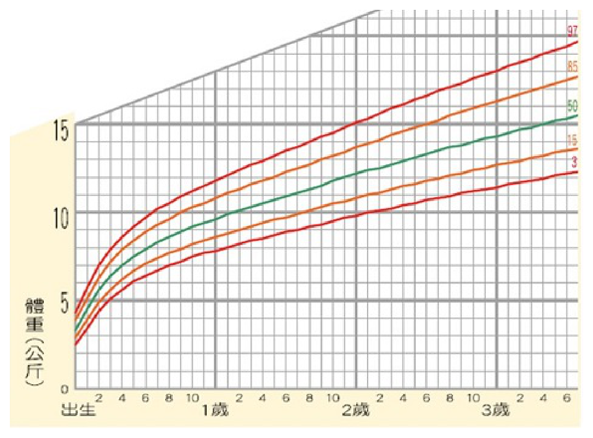
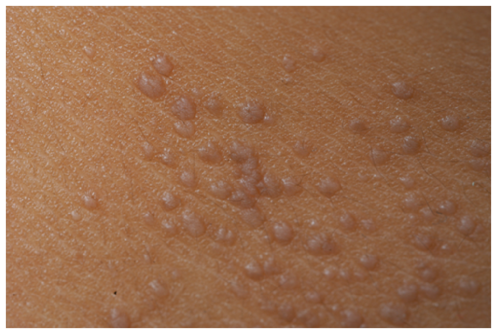
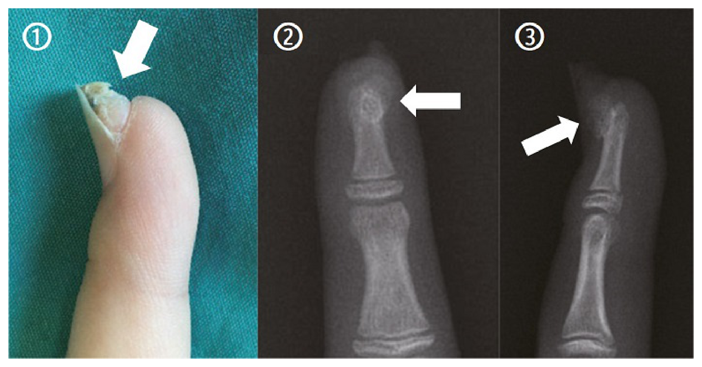
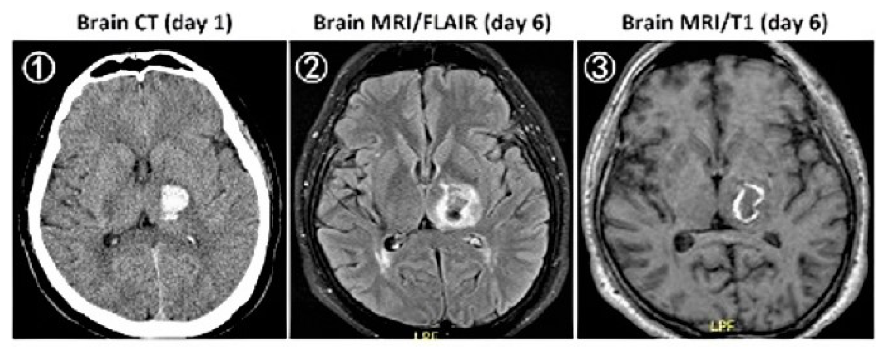
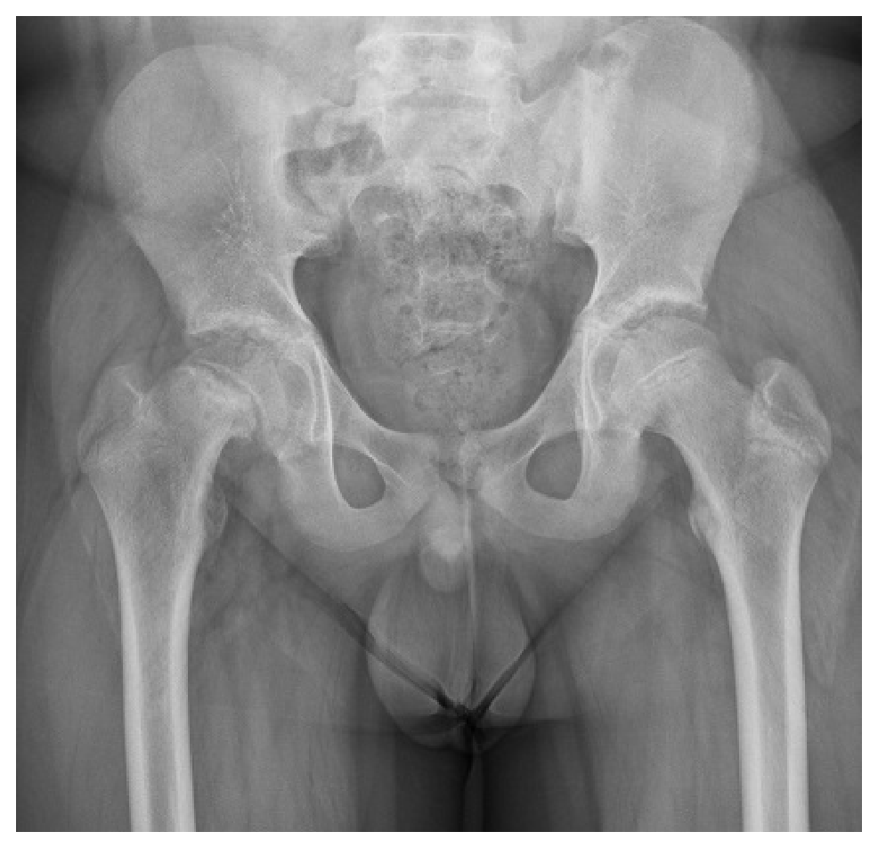

112 年第 2 次醫師醫學（四）（包括小兒科、皮膚科、神經科、精神科等科目及其相關臨床實例與醫學倫理）試題與答案
這一頁是民國 112 年第 2 次醫師醫學（四）（包括小兒科、皮膚科、神經科、精神科等科目及其相關臨床實例與醫學倫理）的整份歷屆試題，共 80 題，題目與標準答案出自考選部「國家考試試題及測驗式試題答案」開放資料，其中 80 題附有詳解。以下逐題列出題幹、選項與答案；要計時作答或記錄成績，請用線上練習。
考選部原始場次代碼：112080
線上作答這一科 →
全部 80 題
第 1 題
有關嬰兒玫瑰疹（roseola infantum）的敘述，下列何者最不恰當？
- （A）最主要的致病原是HHV-6B
- （B）95%的病童年齡在2歲以前，感染年齡高峰期是6個月至9個月大
- （C）皮疹呈現從軀幹到面部和四肢，通常持續1～3天，但有時也可能只在幾個小時內可見後就消失
- （D）50%原發性HHV-6B感染的兒童，發燒時間可持續6天或更長時間
答案：（D）
詳解與考點
正解：嬰兒玫瑰疹（roseola infantum）典型為嬰幼兒先高燒數日，退燒後才出現由軀幹向外擴散的皮疹。原發性 HHV-6B 感染的發燒通常持續數日，而「50% 可持續6天或更長」把持續高燒的比例與時間說得不合典型病程，故 D 最不恰當。
A：HHV-6B 是嬰兒玫瑰疹最主要的致病原，HHV-7 亦可造成相似臨床表現，故 A 適當。
B：多數兒童在2歲前感染，感染高峰在嬰兒期，符合嬰兒玫瑰疹的流行病學特徵。
C：退燒後出現淡紅色斑丘疹，從軀幹擴展至頸部、臉部與四肢，常很快消退，是本病的重要線索。
本題考點：嬰兒玫瑰疹（roseola infantum, exanthem subitum）——主要由 HHV-6B 引起，典型病程是高燒後退燒疹；皮疹自軀幹向周邊擴散且短暫。
第 2 題
足月出生，目前6個月大男嬰，體重7公斤，依照兒童健康手冊的附圖，下列敘述何者最適當？

- （A）體重生長指標落在第15百分位，在平均數以下，應該立即轉介評估是否有成長不良
- （B）在100名同年齡的男寶寶裡，目前體重大約排在前第15位
- （C）若一個月大時體重是6公斤，目前生長曲線走勢掉了兩個曲線區間，需立即轉介評估
- （D）此月齡平均體重為8公斤，應積極衛教家屬多增加純配方奶哺餵以達成長所需
答案：（C）
詳解與考點
正解：生長評估重點不只看單次百分位，更要看曲線是否持續沿原有百分位走勢。圖中男嬰體重曲線標示第3、15、50、85、97百分位；若1個月時體重6 kg、目前6個月僅7 kg，曲線已明顯向下跨越兩個曲線區間，表示體重增加速度不佳，應立即轉介評估餵養、熱量攝取及可能的疾病因素，故選C。
A：單次落在第15百分位不等於成長不良。第15百分位仍可為正常個體差異；須合併連續量測的生長趨勢、身長與頭圍，以及餵養與臨床狀況判斷，不能只因低於平均數便立即轉介。
B：第15百分位表示約有15%的同齡男嬰體重較輕、約85%較重，並非體重排在前第15位；「前第15位」會令人誤解為體重較重的一端。
D：圖上的第50百分位是中位數參考線，不是每個嬰兒都必須追上的目標。對生長遲緩應先釐清餵養量、哺乳技巧、疾病與整體生長趨勢；單純要求增加純配方奶，既非依圖判讀的結論，也可能不適合原本的餵養情境。
本題考點：生長曲線（growth chart）以百分位及縱向趨勢評估，而非單一體重值；生長遲緩（growth faltering）常以跨越兩個主要百分位曲線區間作為需進一步評估的警訊；第50百分位（50th percentile）是中位數，非個別嬰兒必須達到的體重目標。
第 3 題
男嬰出生時立即發生呼吸窘迫及發紺症狀，身體診察發現腹部扁平、最強心尖搏動點（point of maximalimpulse）在右胸，下列何者為最可能的診斷？
- （A）先天性橫膈膜疝氣（congenital diaphragmatic hernia）
- （B）食道閉鎖氣管食道瘻管（esophageal atresia with tracheoesophageal fistula）
- （C）後鼻孔閉鎖（choanal atresia）
- （D）胃扭轉（gastric volvulus）
答案：（A）
詳解與考點
正解：出生即呼吸窘迫、發紺、腹部扁平，加上心尖搏動點偏至右胸，表示腹腔臟器可能經橫膈缺損進入胸腔、壓迫肺並推移縱膈。這是先天性橫膈膜疝氣（congenital diaphragmatic hernia）的典型組合，故選 A。
B：食道閉鎖合併氣管食道瘻管常見流口水、餵食後咳嗽或發紺及胃管無法通過，但不能解釋扁平腹與心尖搏動右移。
C：後鼻孔閉鎖可在新生兒造成週期性發紺，哭泣時可能改善，但胸腹部理學檢查不會出現腹部扁平與縱膈移位。
D：胃扭轉可造成上腹脹與嘔吐等消化道症狀，並非出生即以肺受壓、心尖搏動偏移為主的典型表現。
本題考點：先天性橫膈膜疝氣（congenital diaphragmatic hernia）——腹腔臟器進入胸腔造成肺發育不全與縱膈偏移；出生後呼吸窘迫、舟狀腹與心音或心尖搏動偏移是重要線索。
第 4 題
下列關於呼吸窘迫症候群（respiratory distress syndrome）的敘述，何者最不適當？
- （A）臨床表現為early onset of tachypnea，可能合併retraction, grunting and cyanosis，通常剛出生就是呼吸窘迫最嚴重時，在24～72小時內恢復
- （B）胸部X光表現為low lung volumes, diffuse reticulogranular pattern, and air bronchograms
- （C）處置原則包括permissive hypercapnia及avoidance of hyperoxia
- （D）成因為surfactant deficiency，導致肺泡塌陷，無法維持適當功能肺餘容積
答案：（A）
詳解與考點
正解：新生兒呼吸窘迫症候群（respiratory distress syndrome, RDS）由 surfactant 缺乏所致，病程通常在出生後數小時出現並於前幾日惡化，未治療時不是「剛出生最嚴重、24～72小時內恢復」。A 把病程描述成過早達高峰且自行迅速改善，最不適當，故選 A。
B：RDS 胸部X光常見低肺容積、瀰漫性網狀顆粒狀陰影及 air bronchograms，反映肺泡塌陷與瀰漫性肺實質病變，故適當。
C：呼吸支持需避免過度氧合與過度通氣造成肺與視網膜傷害；在可接受的前提下採 permissive hypercapnia 是降低通氣傷害的策略之一。
D：surfactant deficiency 使肺泡表面張力升高、容易塌陷，因而無法維持足夠功能性肺餘容積（functional residual capacity），為 RDS 的基本病理機轉。
本題考點：新生兒呼吸窘迫症候群（neonatal respiratory distress syndrome）——surfactant deficiency 導致肺泡塌陷、低肺容積與 air bronchograms；病程常在出生後逐漸加重，治療重點包含適當呼吸支持與避免 hyperoxia。
第 5 題
下列有關壞死性腸炎（necrotizing enterocolitis, NEC）風險因子的敘述，何者最不適當？
- （A）母乳哺餵的新生兒較餵食配方乳者容易發生NEC
- （B）妊娠週數愈低的早產兒愈容易發生NEC
- （C）文獻上報告腸道菌叢生態與NEC的發生有關
- （D）足月兒的NEC常有次發之前置因子，如先天性心臟病等
答案：（A）
詳解與考點
正解：母乳對壞死性腸炎（necrotizing enterocolitis, NEC）具有保護效果。相較配方乳，母乳有助腸道成熟、免疫保護與菌相調節，因此「母乳哺餵較容易發生 NEC」將風險方向顛倒，最不適當，故選 A。
B：早產與較低妊娠週數是 NEC 的重要危險因子，未成熟腸道、免疫與灌流調節皆使風險提高，故適當。
C：腸道菌叢失衡與 NEC 發生相關，是目前理解其多因性病理機轉的重要一環，故適當。
D：足月兒較少發生 NEC，若發生常須注意先天性心臟病、腸道灌流不良或其他前置疾病，故此敘述適當。
本題考點：壞死性腸炎（necrotizing enterocolitis, NEC）——早產、配方乳與腸道菌相失衡增加風險；母乳（human milk）具保護作用；足月兒 NEC 常伴隨灌流不良等次發性危險因子。
第 6 題
兒童常會被聽到心雜音，下列何者不是功能性心雜音（innocent or functional murmur）的特色？
- （A）中等音高（medium-pitched）的收縮期雜音（systolic murmur）
- （B）第三級的全收縮期雜音（pansystolic murmur）
- （C）心雜音的大小聲會受呼吸與姿勢影響
- （D）輕壓頸靜脈（jugular vein）可使心雜音變小聲
答案：（B）
詳解與考點
正解：功能性心雜音（innocent murmur）應是短暫、柔和、低到中等強度的收縮期雜音，並會隨姿勢或靜脈回流改變。第三級全收縮期雜音（pansystolic murmur）常提示瓣膜逆流或心室中隔缺損等結構性病變，並非功能性心雜音特色，故選 B。
A：功能性心雜音可為中等音高的收縮期雜音，通常音質柔和且無其他心臟病徵象，故適當。
C：功能性雜音會隨呼吸、姿勢與心輸出量改變而變化，這種可變性是其看似令人擔心、實則偏向良性的線索。
D：頸部靜脈嗡鳴會因壓迫同側頸靜脈、改變局部血流而減弱或消失；這種可變性支持其為良性功能性雜音，故適當。
本題考點：功能性心雜音（innocent or functional murmur）——多為柔和的收縮期雜音，隨姿勢與靜脈回流改變；全收縮期雜音（pansystolic murmur）應優先考慮結構性心臟病。
第 7 題
8個月大男嬰，因高燒5天來求診，身體診察發現在卡介苗接種處出現紅腫、皮膚出現紅疹、舌頭紅腫如草莓般，眼結膜有充血現象，但沒什麼眼屎增加的感覺。下列何種疾病的可能性最高？
- （A）Kawasaki disease
- （B）pharyngoconjunctival fever
- （C）sepsis
- （D）rheumatic fever
答案：（A）
詳解與考點
正解：高燒5天合併多系統黏膜皮膚表現：卡介苗接種處紅腫、皮疹、草莓舌及非化膿性結膜充血。這組合高度符合川崎病（Kawasaki disease），故選 A。
B：咽結膜熱（pharyngoconjunctival fever）常見發燒、咽炎與結膜炎，通常可有咽部症狀及結膜分泌物，不能完整解釋卡介苗疤痕反應與草莓舌。
C：sepsis 可造成高燒與皮疹，但本題特異的黏膜皮膚組合與接種處發炎更指向川崎病；它看似可解釋高燒，卻缺乏支持敗血症的全身毒性或感染灶。
D：rheumatic fever 多在A型鏈球菌咽炎後發生，常見遊走性多關節炎、心炎等，年齡與臨床組合均不符。
本題考點：川崎病（Kawasaki disease）——持續發燒合併非化膿性結膜充血、口腔黏膜變化、皮疹與卡介苗接種處反應是重要線索；須及早辨識其冠狀動脈併發症風險。
第 8 題
一週大的新生兒，被發現有發紺（cyanosis）的現象，胸部X光有明顯的肺部充血，懷疑可能有心臟血管異常，下列鑑別診斷何者最不需要考慮？
- （A）心室中隔缺損（ventricular septal defect）
- （B）全肺靜脈回流異常（total anomalous pulmonary venous return）
- （C）三尖瓣閉鎖（tricuspid atresia）合併肺動脈狹窄（pulmonary stenosis）
- （D）動脈幹異常（truncus arteriosus）
本題送分，無標準答案
詳解與考點
本題官方公告送分。
第 9 題
4週大足月男嬰無特殊病史，全母乳哺餵。因持續黃疸與解灰白色糞便就診。身體診察無生長遲滯，體溫、活動力正常，鞏膜與皮膚黃，並有輕度肝腫大、茶色尿。檢驗結果：total bilirubin 15 mg/dL、direct bilirubin 12.7mg/dL、ALT 45 U/L、AST 52 U/L、ALP 600 U/L。下列敘述何者最不適當？
- （A）剖腹探查及膽道攝影（laparotomy and direct cholangiography）是主要的診斷方式
- （B）肝切片組織病理顯示廣泛性發炎細胞浸潤、肝細胞壞死、肝內膽管無明顯異常，可以確診肝外膽道閉鎖（biliary atresia）
- （C）膽道閉鎖（biliary atresia）的手術方式稱為葛西氏手術（Kasai procedure）
- （D）膽道閉鎖（biliary atresia）手術的黃金時間為8週大以前
答案：（B）
詳解與考點
正解：4週大嬰兒有持續黃疸、灰白便、茶色尿及 direct bilirubin 12.7 mg/dL，指向膽汁鬱積與膽道閉鎖（biliary atresia）。膽道閉鎖的肝切片較典型為膽管增生、膽汁栓與門脈區纖維化等膽汁鬱積變化；B 所述廣泛發炎細胞浸潤、肝細胞壞死且肝內膽管無明顯異常，較非其典型病理，故最不適當。
A：手術中直接膽道攝影可確認膽道通暢與否，是評估膽道閉鎖的重要確診方法之一，故非答案。
C：膽道閉鎖的手術為葛西氏手術（Kasai procedure），以肝門空腸吻合建立膽汁引流，敘述正確。
D：膽道閉鎖須儘早手術，越早建立膽汁引流預後越好；8週大以前的表述符合強調早期介入的臨床原則，故非最不適當。
本題考點：新生兒膽汁鬱積（neonatal cholestasis）——直接型高膽紅素血症、灰白便與深色尿應警覺膽道閉鎖（biliary atresia）；葛西氏手術（Kasai procedure）需及早進行，肝病理常見膽管增生與膽汁鬱積。
第 10 題
15歲男孩因臉部長青春痘求醫，醫生開立了藥物治療5天後，他出現了吞嚥疼痛的症狀，下列敘述何者最不適當？
- （A）可能是doxycyline引起的食道炎
- （B）睡前服藥時沒有配足量的水喝是可能的原因
- （C）內視鏡檢查呈現廣泛性的食道潰瘍
- （D）支持性療法包括吃流質食物、抑酸劑等
答案：（C）
詳解與考點
正解：服用治療青春痘的藥物後很快出現吞嚥疼痛，典型要想到 doxycycline 的藥丸性食道炎（pill-induced esophagitis），常在藥丸滯留處造成局部中段食道潰瘍。C 說內視鏡呈現廣泛性食道潰瘍，與這種局部接觸性傷害不符，最不適當，故選 C。
A：doxycycline 是常見造成藥丸性食道炎的藥物之一，服藥後出現吞嚥痛或胸骨後疼痛應提高警覺，故適當。
B：睡前服藥又未以足量水送服，容易讓藥丸停留於食道並造成黏膜接觸傷害，是重要危險因子。
D：停用或調整致病藥物、補充水分、避免刺激食物與症狀性抑酸治療等支持性處置，可幫助黏膜恢復，故適當。
本題考點：藥丸性食道炎（pill-induced esophagitis）——doxycycline 是常見原因；睡前少水吞服會增加食道滯留風險；病灶多為局部接觸性潰瘍而非廣泛食道病變。
第 11 題
1歲6個月大男童，無特殊病史，解大量褐紅色血便被送到急診。最近2週無發燒、嘔吐、腹痛、皮膚疹或服用藥物。男童平時每日解一次成形軟便，未曾發生血便。身體診察顯示略顯蒼白、心搏快、腹部軟、沒有壓痛（tenderness）或反彈痛（rebound tenderness）。血紅素值10.8 g/dL、糞便潛血反應呈陽性。下列何項檢查對於確定診斷的敏感性最高？
- （A）腹部血管攝影（abdominal angiography）
- （B）肝膽道閃爍攝影（hepatobiliary scintigraphy）
- （C）梅克爾憩室檢查（Meckel scan enhanced with cimetidine）
- （D）上消化道內視鏡檢查（upper GI panendoscope）
答案：（C）
詳解與考點
正解：幼兒無痛性大量褐紅色血便、腹部柔軟且無感染或發炎症狀，最符合含異位胃黏膜的梅克爾憩室（Meckel diverticulum）潰瘍出血。梅克爾憩室掃描（Meckel scan）利用核醫示蹤異位胃黏膜；以 cimetidine 增強可提高偵測率，故敏感性最高的是 C。
A：腹部血管攝影需有持續且足量的活動性出血才較可能定位，對間歇性梅克爾憩室出血敏感性不及專用掃描。
B：肝膽道閃爍攝影用於膽汁排泄與肝膽系統評估，不是尋找腸道異位胃黏膜的檢查。
D：上消化道內視鏡可檢查食道、胃與十二指腸，梅克爾憩室位於遠端小腸，通常不在其可及範圍。
本題考點：梅克爾憩室（Meckel diverticulum）——幼兒無痛性下消化道出血常因異位胃黏膜造成潰瘍；梅克爾憩室掃描（Meckel scan）可偵測異位胃黏膜，cimetidine 可提高檢出率。
第 12 題
有關腎病症候群（nephrotic syndrome）患者容易受到感染的原因，下列何者最不適當？
- （A）源於低免疫球蛋白血症（hypoglobulinemia）
- （B）源於低白血球症（leukopenia）
- （C）源於尿液流失補體C3與C5
- （D）源於尿液流失alternative pathway的factor B與factor D
答案：（B）
詳解與考點
正解：腎病症候群（nephrotic syndrome）的蛋白尿會流失免疫相關蛋白，使調理與抗體功能受損；它不是以低白血球症（leukopenia）作為典型感染原因。B 無法解釋此病人群的感染傾向，最不適當，故選 B。
A：大量尿蛋白流失可造成低免疫球蛋白血症（hypogammaglobulinemia），降低體液免疫能力，為感染風險增加的原因之一。
C：補體成分流失會削弱調理作用與對特定病原的防禦，故尿液流失補體 C3、C5 可增加感染易感性。
D：alternative pathway 的 factor B 與 factor D 流失同樣會使補體替代途徑功能受影響，屬合理的機轉。
本題考點：腎病症候群（nephrotic syndrome）與感染——尿中流失免疫球蛋白（immunoglobulins）及補體（complement）會削弱體液免疫與調理作用；低白血球症（leukopenia）不是其典型主因。
第 13 題
關於小兒夜間遺尿症（nocturnal enuresis），下列敘述何者最不適當？
- （A）如果父母其中之一在小時候有夜間遺尿症，則其子女有夜間遺尿症的風險會提高
- （B）要先排除尿崩症、糖尿病和慢性腎臟疾病造成的次發性夜間遺尿症
- （C）應評估過夜禁食之尿液滲透壓，以排除多尿造成的次發性夜間遺尿症
- （D）因為藥物治療效果很好，應列為第一線治療
答案：（D）
詳解與考點
正解：小兒夜間遺尿症（nocturnal enuresis）的治療應先確認是否為原發性單一症狀夜遺尿，並採教育、行為介入與遺尿警報器等方式；藥物效果未必持久，並非普遍第一線。D 將藥物治療直接列為第一線，最不適當，故選 D。
A：夜間遺尿有家族聚集性，父母任一方有病史時子女風險提高，故適當。
B：若有多尿、口渴、白天症狀或其他警訊，應排除尿崩症、糖尿病與慢性腎臟疾病等次發性原因，故適當。
C：評估夜間尿量與尿液濃縮能力有助辨認多尿或尿液濃縮異常造成的次發性遺尿；過夜禁食尿液滲透壓是可用的評估線索之一。
本題考點：夜間遺尿症（nocturnal enuresis）——先分辨原發性與次發性遺尿並排除多尿性疾病；第一線為教育、行為治療與遺尿警報器（enuresis alarm），藥物多作選擇性或短期輔助。
第 14 題
有關兒童的紅斑性狼瘡腎炎（lupus nephritis）之敘述，下列何者最不適當？
- （A）兒童的紅斑性狼瘡常合併腎炎
- （B）WHO分級class IV的病童會出現血尿、蛋白尿與急性腎臟損傷的變化
- （C）類固醇脈衝治療（pulse therapy）與免疫抑制劑適用於所有分級的紅斑性狼瘡腎炎
- （D）血管張力素轉換酶抑制劑（ACEI）與血管張力素受體阻斷劑（ARB），可以有效控制血壓並且減少蛋白尿
答案：（C）
詳解與考點
正解：「所有分級」的狼瘡腎炎。腎臟病理分級與臨床嚴重度不同，類固醇脈衝治療及強效免疫抑制應依增生性病灶、腎功能與蛋白尿等風險選用，並非所有分級都適用，故最不適當的是 C。
A：兒童系統性紅斑性狼瘡常有腎臟侵犯，腎炎是重要的器官表現，敘述正確，故非答案。
B：class IV 為瀰漫性增生性狼瘡腎炎，可表現血尿、蛋白尿與腎功能惡化；它看似只是病理名稱，卻代表較嚴重的腎絲球發炎，敘述合宜。
D：ACEI 與 ARB 可降低腎絲球內壓、控制血壓並減少蛋白尿，是蛋白尿性腎病的重要支持治療，敘述正確。
本題考點：狼瘡腎炎（lupus nephritis）的病理分級與風險分層；增生性狼瘡腎炎（proliferative lupus nephritis）的免疫抑制治療；腎素－血管張力素系統阻斷（renin-angiotensin system blockade）的降蛋白尿作用。
第 15 題
兒童異位性皮膚炎的好發位置，下列何者最不可能？
- （A）嬰幼兒臉部
- （B）青少年四肢屈側
- （C）嬰幼兒包尿布區域
- （D）幼兒四肢伸側
答案：（C）
詳解與考點
正解：異位性皮膚炎依年齡改變的典型分布。嬰幼兒常累及臉部與四肢伸側，幼童與青少年則較常見於屈側；包尿布區因潮濕遮蔽，反而通常不受累或較少受累，故最不可能的是 C。
A：嬰幼兒臉部，尤其臉頰，是常見分布，故非答案。
B：青少年四肢屈側是慢性異位性皮膚炎的典型位置，敘述正確。
D：幼兒四肢伸側可見病灶，與嬰幼兒型的分布相符，故非答案。
本題考點：異位性皮膚炎（atopic dermatitis）的年齡相關分布；嬰幼兒常見臉部與伸側、較大兒童常見屈側；尿布區相對保留（diaper-area sparing）。
第 16 題
關於過敏機轉，下列敘述何者最不適當？
- （A）Th2在IgE相關過敏性疾病中扮演重要的角色
- （B）Th2會分泌IL-4、IL-5、IL-13等細胞激素（cytokines）
- （C）innate lymphoid cells（ILC）目前可分為ILC1s、ILC2s、ILC3s
- （D）ILC3s會被IL-33、IL-25與TSLP活化而誘發過敏反應
答案：（D）
詳解與考點
正解：第 2 型先天淋巴細胞的活化訊號。IL-33、IL-25 與 TSLP 是上皮警報素（alarmins），主要活化 ILC2，促進第 2 型發炎與過敏反應；ILC3 的核心功能較偏向 IL-17、IL-22 相關的黏膜防禦，故 D 最不適當。
A：Th2 在 IgE 相關過敏疾病中促進 B 細胞類別轉換與嗜酸性球反應，扮演重要角色，敘述正確。
B：Th2 可分泌 IL-4、IL-5、IL-13，分別與 IgE 反應、嗜酸性球及黏液／氣道反應有關，敘述正確。
C：ILC 可概分為 ILC1、ILC2、ILC3 三群，與不同輔助型 T 細胞反應相對應，敘述正確。
本題考點：第 2 型發炎（type 2 inflammation）；第 2 型先天淋巴細胞（ILC2）；上皮警報素（epithelial alarmins）IL-33、IL-25 與 TSLP。
第 17 題
關於蕁麻疹（urticaria）的敘述，下列何者最不適當？
- （A）症狀為突發性、隆起於皮膚的風疹塊（wheal）
- （B）IgE媒介所導致的過敏反應
- （C）病灶持續時間達4星期，即為慢性蕁麻疹（chronic urticaria）
- （D）慢性蕁麻疹（chronic urticaria）會影響較深處的皮膚及黏膜組織造成腫脹，稱之為血管性水腫（angioedema）
答案：（C）
詳解與考點
正解：慢性蕁麻疹的時間定義。反覆出現的蕁麻疹持續超過 6 週才稱慢性蕁麻疹，僅達 4 週仍不符合此界線，故 C 最不適當。
A：蕁麻疹典型病灶是突然出現、隆起且常發癢的風疹塊，敘述正確。
B：急性蕁麻疹可由 IgE 媒介的立即型過敏反應引起；雖非每一例皆由 IgE 所致，這是合理的致病機轉描述，故非答案。
D：血管性水腫累及較深的真皮、皮下或黏膜組織而造成腫脹，常可與蕁麻疹並存，敘述正確。
本題考點：蕁麻疹（urticaria）的風疹塊表現；慢性蕁麻疹（chronic urticaria）定義為超過 6 週；血管性水腫（angioedema）的較深層組織侵犯。
第 18 題
關於兒童特發性血小板減少性紫斑症（idiopathic thrombocytopenic purpura, ITP），下列敘述何者最適當？
- （A）通常發生在病毒感染後1～4週後
- （B）好發年齡在11～14歲
- （C）常會合併嚴重貧血現象
- （D）治療以輸血小板為主
答案：（A）
詳解與考點
正解：兒童 ITP 常在病毒感染後出現的典型病史。免疫性血小板減少症常於感染後約 1～4 週發生，表現以孤立性血小板減少與皮膚黏膜出血為主，故 A 最適當。
B：兒童 ITP 常見於較年幼兒童，並非特別好發於 11～14 歲，故不適當。
C：典型 ITP 是孤立性血小板減少；嚴重貧血應促使考慮明顯出血、溶血或骨髓疾病等其他診斷，故非典型表現。
D：多數兒童個案可觀察或依出血風險給予治療，輸注血小板通常保留給危及生命的出血，並非主要常規治療。
本題考點：免疫性血小板減少症（immune thrombocytopenia, ITP）；病毒感染後的免疫性血小板破壞；孤立性血小板減少（isolated thrombocytopenia）的鑑別。
第 19 題
關於兒童癌症，下列敘述何者最不適當？
- （A）白血病是兒童最常見的癌症之一
- （B）實體腫瘤（solid tumor）的正確診斷常需要影像與組織學判讀
- （C）大部分兒童癌症主要的治療是使用標靶藥物
- （D）特定疾病（如神經纖維瘤）的兒童罹患癌症的風險會增加
答案：（C）
詳解與考點
正解：「大部分」兒童癌症的主要治療。兒童癌症依病種可使用化學治療、手術、放射治療、造血幹細胞移植與標靶或免疫治療；標靶藥物不是大部分兒童癌症的主要共同治療，故 C 最不適當。
A：白血病是兒童最常見的惡性腫瘤類別之一，敘述正確。
B：實體腫瘤通常須結合影像定位、分期與組織病理學確立診斷，敘述正確。
D：遺傳性腫瘤易感症候群可提高特定癌症風險；神經纖維瘤病即是需留意相關腫瘤的例子，故非答案。
本題考點：兒童癌症（pediatric cancer）的多模式治療（multimodal therapy）；實體腫瘤（solid tumor）的病理診斷；遺傳性腫瘤易感性（cancer predisposition）。
第 20 題
關於異體造血幹細胞移植的適應症，下列何者最不適當？
- （A）重型地中海型貧血
- （B）急性淋巴性白血病
- （C）嚴重型再生不良性貧血
- （D）系統性紅斑性狼瘡
答案：（D）
詳解與考點
正解：異體造血幹細胞移植的常規適應症。重型地中海型貧血、部分高風險或復發急性淋巴性白血病，以及嚴重再生不良性貧血，都可能以異體移植作根治性治療；系統性紅斑性狼瘡並非常規異體移植適應症，故 D 最不適當。
A：重型地中海型貧血可考慮異體造血幹細胞移植以重建正常造血，敘述合宜。
B：急性淋巴性白血病在特定高風險、難治或復發情況可考慮異體移植，故非答案。
C：嚴重型再生不良性貧血可用異體造血幹細胞移植治療，尤其適合有合適捐贈者的病人，敘述正確。
本題考點：異體造血幹細胞移植（allogeneic hematopoietic stem cell transplantation）；造血衰竭（bone marrow failure）；血液惡性腫瘤（hematologic malignancy）的根治性治療。
第 21 題
下列病因與兒童休克型態的關聯，何者最不適當？
- （A）張力性氣胸：阻塞性（obstructive）
- （B）擴張性心肌病變：心因性（cardiogenic）
- （C）心包膜填塞：分布性（distributive）
- （D）腎病症候群：低容積性（hypovolemic）
答案：（C）
詳解與考點
正解：心包膜填塞造成的血流動力學障礙。心包膜壓力限制心室舒張充填，使心輸出量下降，屬阻塞性休克，不是分布性休克，故 C 最不適當。
A：張力性氣胸壓迫大血管並阻礙靜脈回流，屬阻塞性休克，敘述正確。
B：擴張性心肌病變使心肌收縮功能下降、心輸出量不足，屬心因性休克，敘述正確。
D：腎病症候群的低白蛋白血症可使有效循環血量下降，出現低容積性休克，敘述合宜。
本題考點：休克分類（shock classification）；阻塞性休克（obstructive shock）的心包膜填塞與張力性氣胸；有效循環血量（effective circulating volume）。
第 22 題
下列何者不屬於低壓缺氧（hypobaric hypoxia）時所可能表現的順應（acclimatization）現象？
- （A）呼吸加速
- （B）血壓上升
- （C）心跳加速
- （D）血管張力（venous tone）下降
答案：（D）
詳解與考點
正解：低壓缺氧時維持氧輸送的交感代償。低氧會促進通氣，並使心跳與交感血管張力上升以支持灌流；靜脈張力下降會減少靜脈回流，與此代償方向不合，故 D 不屬於可能的順應現象。
A：呼吸加速可提高肺泡通氣量，是高海拔低壓缺氧的主要早期順應反應，故非答案。
B：交感神經活化可使血壓上升或維持，作為支持器官灌流的反應，敘述合宜。
C：心跳加速可增加心輸出量與氧輸送，為常見代償反應，故非答案。
本題考點：低壓缺氧（hypobaric hypoxia）；高海拔順應（acclimatization）；交感神經代償（sympathetic compensation）與氧輸送（oxygen delivery）。
第 23 題
下列何種病因在兒童族群當中，最不會出現多尿（polyuria）症狀？
- （A）中樞型尿崩症（central diabetes insipidus）
- （B）低血鈣症（hypocalcemia）
- （C）原發性多喝症（primary polydipsia）
- （D）第1型糖尿病（type 1 diabetes mellitus）
答案：（B）
詳解與考點
正解：各病因是否使腎臟排出過多水分。中樞型尿崩症、原發性多喝症及第 1 型糖尿病分別可造成水利尿或滲透性利尿；低血鈣症不是兒童多尿的典型病因，故 B 最不會出現多尿。
A：中樞型尿崩症因抗利尿激素不足，腎臟無法濃縮尿液，會產生大量稀尿，故非答案。
C：原發性多喝症因水分攝取增加，尿量隨之增多，敘述正確。
D：第 1 型糖尿病在高血糖時，尿糖造成滲透性利尿，常有多尿與口渴，故非答案。
本題考點：多尿（polyuria）的水利尿（water diuresis）與滲透性利尿（osmotic diuresis）；中樞型尿崩症（central diabetes insipidus）；糖尿病（diabetes mellitus）的尿糖性利尿。
第 24 題
下列關於兒童性早熟的敘述，何者最不適當？
- （A）女孩8歲以前、男孩9歲以前有第二性徵的出現，即符合性早熟的定義
- （B）並非所有的性早熟都會影響病童的最終成人身高（adult height）
- （C）相較女孩而言，男孩性早熟有較高的可能是器質性（organic）原因所導致
- （D）中樞性性早熟的病童都應接受性釋素類似物（GnRH agonist）治療，以延緩青春期的進展
答案：（D）
詳解與考點
正解：「都應」接受 GnRH agonist 的絕對化敘述。中樞性性早熟是否治療，須綜合起始年齡、青春期進展速度、骨齡、預測成人身高與心理社會影響評估，並非每一位病童均需治療，故 D 最不適當。
A：女孩 8 歲前、男孩 9 歲前出現第二性徵是性早熟的傳統定義，敘述正確。
B：性早熟對成人身高的影響取決於進展速度與骨齡成熟等因素，不是每一例都造成明顯損害，故非答案。
C：男孩性早熟較需要排除中樞神經系統等器質性病因，敘述正確。
本題考點：性早熟（precocious puberty）的年齡定義；中樞性性早熟（central precocious puberty）；性釋素類似物（GnRH agonist）的個別化治療決策。
第 25 題
13歲男孩因身材矮小而就診，出生時體重3公斤，父親164公分，母親153公分。此男孩身體診察顯示身高136公分（低於第3百分位），體重38公斤（第10百分位），左右睪丸均為4毫升，無陰毛發育，骨齡檢查結果為11歲。應優先考慮下列那一種診斷？
- （A）家族性身材矮小（familial short stature）
- （B）體質性生長遲延（constitutional growth delay）
- （C）腦垂體低能症（hypopituitarism）
- （D）先天性腎上腺增生（congenital adrenal hyperplasia）
答案：（C）
詳解與考點
正解：身高明顯低於第 3 百分位、骨齡延遲且青春期發育尚未明顯進展。這些表現應優先評估生長激素軸與其他腦垂體功能，故 C；惟仍須結合生長速度與歷年生長曲線，與體質性生長遲延進一步鑑別。
A：家族性身材矮小通常骨齡接近實際年齡，且生長曲線多平行於較低百分位；本題骨齡明顯延遲，不典型。
B：體質性生長遲延也可見骨齡延遲，因此看似合理；但本題的身高與體重都偏低，應先排除內分泌或慢性疾病，不能直接歸因於體質性遲延。
D：先天性腎上腺增生常見雄性素過多與骨齡提前，和本題無陰毛、骨齡延遲的表現相反。
本題考點：矮小症（short stature）的生長曲線判讀；骨齡（bone age）與青春期評估；腦垂體低能症（hypopituitarism）的內分泌鑑別。
第 26 題
患有潛在疾病的患者，常會增加特定嚴重感染的發生風險，下列潛在疾病與引發感染之組合，何者最不恰當？
- （A）無脾症：常見b型流行嗜血桿菌和肺炎鏈球菌引起的菌血症
- （B）鐮狀細胞病：常見沙門氏菌引起的骨髓炎
- （C）補體缺乏：常見瘧原蟲引起的瘧疾
- （D）原發性先天性中性球減少症：常見金黃色葡萄球菌或綠膿桿菌感染之膿瘍
答案：（C）
詳解與考點
正解：免疫缺陷與特定病原的配對。補體缺乏特別增加奈瑟菌屬感染風險，並不會特異性造成瘧原蟲感染；瘧疾主要與暴露地區及蚊媒傳播相關，故 C 最不恰當。
A：無脾症對莢膜菌的清除能力下降，b 型流行嗜血桿菌與肺炎鏈球菌可引起嚴重菌血症，敘述正確。
B：鐮狀細胞病與沙門氏菌骨髓炎的關聯是重要經典考點，故非答案。
D：先天性中性球減少症使抗細菌防禦受損，金黃色葡萄球菌與綠膿桿菌等可造成反覆或嚴重膿瘍，敘述合宜。
本題考點：補體缺乏（complement deficiency）與奈瑟菌感染（Neisseria infection）；無脾症（asplenia）與莢膜菌（encapsulated bacteria）；中性球減少症（neutropenia）的細菌感染風險。
第 27 題
3個月大男嬰近兩天在臉上、身上出現一些水泡樣的丘疹，無發燒，無呼吸道及腸胃道症狀。依據臨床表徵與接觸史，下列何者是最有可能的感染來源？
- （A）2天前姐姐出現嬰兒玫瑰疹
- （B）2週前哥哥出現水痘
- （C）5天前媽媽出現帶狀疱疹
- （D）3週前鄰居出現手足口症
答案：（B）
詳解與考點
正解：水泡樣丘疹與接觸史的潛伏期。水痘的潛伏期通常約 2 週，哥哥 2 週前發病與 3 個月大嬰兒目前的水疱性皮疹最相符，故最可能來源是 B。
A：嬰兒玫瑰疹常先高燒、退燒後出現斑丘疹，不是典型水疱性皮疹，且 2 天的時間關係不支持。
C：帶狀疱疹病灶含水痘帶狀疱疹病毒，確可使易感者感染水痘；但 5 天前接觸短於典型潛伏期，故不如（B）相符。
D：手足口症常見口腔潰瘍與手足、臀部病灶，其表現與接觸時間都不如（B）能解釋本題。
本題考點：水痘（varicella）的水疱性皮疹；水痘帶狀疱疹病毒（varicella-zoster virus）；傳染病潛伏期（incubation period）的暴露史判讀。
第 28 題
3歲男童無特殊病史或藥物過敏史，因發燒就診，耳溫測量為40℃，診斷為急性扁桃腺炎。下列發燒處置及衛教，何者最不適當？
- （A）可以使用ibuprofen暫時降溫
- （B）僅靠溫水拭浴無法達到降低體溫的效果
- （C）使用退燒藥無法改變疾病病程
- （D）發燒的機轉為身體散熱不良
答案：（D）
詳解與考點
正解：發燒的生理機轉。感染引發致熱原使下視丘體溫設定點上調，身體主動產熱與減少散熱以達新設定點；不能把發燒本身說成單純「散熱不良」，故 D 最不適當。
A：對無禁忌症的兒童，ibuprofen 可用於暫時緩解發燒不適，敘述合宜。
B：選項的「無法達到降低體溫的效果」過度絕對，溫水拭浴可短暫、小幅降溫；但效果有限且不持久，不能作為單獨、有效的退燒方式。相較之下，D 將發燒機轉誤作單純散熱不良，依單選題意仍為最不適當者。
C：退燒藥主要改善不適與體溫，通常不改變感染疾病本身的自然病程，敘述正確。
本題考點：發燒（fever）的下視丘設定點（hypothalamic set point）；致熱原（pyrogen）；退燒治療（antipyretic therapy）的目標是舒緩不適。
第 29 題
有關單純型熱性痙攣（simple febrile seizure）的敘述，下列何者最不適當？
- （A）一般發生在6～60個月的孩童（巔峰12～18個月）
- （B）家族中有熱性痙攣病史的機率較一般人高
- （C）通常都在發燒的24小時以內發作，而且不超過一次
- （D）發作時間通常超過15分鐘，甚至可能產生癲癇重積狀態（status epilepticus）
答案：（D）
詳解與考點
正解：單純型熱性痙攣的定義。單純型熱性痙攣為全身性、持續時間短、24 小時內不復發的發作；持續超過 15 分鐘或癲癇重積狀態屬複雜型熱性痙攣的警訊，故 D 最不適當。
A：單純型熱性痙攣好發於 6～60 個月，且幼兒期為高峰，敘述正確。
B：有家族史者發生熱性痙攣的機率較高，反映遺傳易感性，故非答案。
C：單純型通常在發燒早期發作，且 24 小時內僅一次，敘述符合定義。
本題考點：單純型熱性痙攣（simple febrile seizure）；複雜型熱性痙攣（complex febrile seizure）；癲癇重積狀態（status epilepticus）的辨識。
第 30 題
有關妥瑞氏症候群（Tourette syndrome）的敘述，下列何者最不適當？
- （A）包含動作型、聲音型抽動（tics），症狀時間超過一年
- （B）需注意有無合併注意力不足／過動症（attention-deficit/hyperactivity disorder）
- （C）大多數個案在進入成年期，症狀會越來越明顯
- （D）有些個案可能會合併有強迫症（obsessive-compulsive disorder）
答案：（C）
詳解與考點
正解：妥瑞氏症的自然病程。抽動通常在兒童期出現，許多個案於青春期後期至成年早期減輕；「大多數」進入成年期越來越明顯不符合典型走向，故 C 最不適當。
A：妥瑞氏症包含多種動作型抽動與至少一種聲音型抽動，病程持續超過一年，敘述正確。
B：注意力不足／過動症是常見共病，臨床評估需主動注意，故非答案。
D：強迫症或強迫症狀可與妥瑞氏症共病，敘述正確。
本題考點：妥瑞氏症候群（Tourette syndrome）；抽動（tics）的病程；注意力不足／過動症（ADHD）與強迫症（OCD）的精神共病。
第 31 題
下列何疾病會造成前囟門（anterior fontanelle）早期關閉？
- （A）craniosynostosis
- （B）achondroplasia
- （C）hypothyroidism
- （D）hydrocephalus
答案：（A）
詳解與考點
正解：顱縫過早骨化。craniosynostosis 使一條或多條顱縫提早閉合，限制顱骨正常擴張，因此可造成前囟門早期關閉，故選 A。
B：achondroplasia 常有巨頭、前額突出等顱骨生長表現，前囟門反而可較晚關閉，故非答案。
C：hypothyroidism 會使骨成熟延遲，常見囟門延遲關閉而不是提早關閉。
D：hydrocephalus 使顱內壓或頭圍增加，常見囟門飽滿、擴大或延遲關閉，與題意相反。
本題考點：顱縫早閉症（craniosynostosis）；前囟門（anterior fontanelle）的評估；嬰兒頭圍與顱內壓（intracranial pressure）異常。
第 32 題
3個月大寶寶洗澡時被發現右側頭頂有一包血腫，無發燒、咳嗽、流鼻水等症狀，但是奶量減少且有些嗜睡。下列敘述何者最適當？
- （A）這個年紀的頭部外傷，大多數是寶寶的日常活動受傷所導致
- （B）如臨床評估需要，腦部核磁共振（MRI）可初步偵測可能的腦內出血
- （C）身體診察發現寶寶的左大腿內側有瘀傷，此部位是此年紀活動常見的受傷部位
- （D）受虐性腦傷（abusive head trauma）應列入鑑別診斷
答案：（D）
詳解與考點
正解：尚未能自主活動的 3 個月嬰兒出現頭部血腫、嗜睡及非典型部位瘀傷。這些傷勢不能輕易以日常活動解釋，須將受虐性腦傷列入鑑別並立即進行安全與醫療評估，故選 D。
A：3 個月嬰兒活動能力有限，頭部外傷並非多數由其日常活動造成；這種說法容易忽略非意外傷害，故錯。
B：急性疑似顱內傷時，非對比頭部 CT 通常是第一線檢查；MRI 多用於後續補充腦實質、軸突及較細微傷害的評估。因此 B 雖非全然不能使用 MRI，仍不如 D 直接切中本題。
C：未能行走的嬰兒在大腿內側出現瘀傷不是常見意外受傷分布，是需要提高警覺的線索，故錯。
本題考點：受虐性腦傷（abusive head trauma）；非意外傷害（non-accidental injury）的警訊；無法活動嬰兒（non-mobile infant）的瘀傷評估。
第 33 題
有關粒線體基因致病性變異的遺傳（mitochondrial inheritance），下列敘述何者最不適當？
- （A）粒線體DNA主要是遺傳自母親（maternal inherited）
- （B）男女皆有可能罹患此類疾病
- （C）變異形式主要為缺失（deletion）或點突變（point mutation）
- （D）一般人身上都帶有一個由母親遺傳而來的粒線體基因病變
答案：（D）
詳解與考點
正解：粒線體 DNA 的母系遺傳並不等於每個人都帶有致病變異。每個人都有來自母親的粒線體 DNA，但只有帶有致病性變異者才會罹患或有傳遞風險；把正常母系遺傳說成「一般人都帶有病變」錯誤，故 D 最不適當。
A：受精卵的粒線體主要來自卵子，因此粒線體 DNA 主要呈母系遺傳，敘述正確。
B：男性與女性都可帶有並表現粒線體疾病；差異在男性通常不把粒線體 DNA 傳給子代，故非答案。
C：粒線體疾病的致病變異可為點突變或缺失等形式，敘述正確。
本題考點：粒線體遺傳（mitochondrial inheritance）；母系遺傳（maternal inheritance）；異質性（heteroplasmy）與致病性粒線體 DNA 變異。
第 34 題
下列關於異位性皮膚炎（atopic dermatitis）的敘述，何者錯誤？
- （A）嬰兒時期（infancy）可發生在臉部
- （B）嬰兒時期（infancy）多發生在肢體屈側（flexor side）
- （C）嬰兒時期（infancy）常伴隨食物過敏
- （D）成人時期（adulthood）的異位性皮膚炎，可以慢性手部濕疹（chronic hand eczema）作為表現
答案：（B）
詳解與考點
正解：嬰兒期異位性皮膚炎的典型分布。嬰兒常先有臉頰、頭皮與伸側的濕疹性病灶；肢體屈側較是兒童期以後常見的分布。因此（B）把嬰兒期說成多發於屈側，與年齡相關的臨床表現不符，故選 B。
A：嬰兒異位性皮膚炎可侵犯臉部，常見臉頰發紅、滲出或結痂，敘述正確，故不是本題要找的錯誤項。
C：異位性皮膚炎嬰兒可合併食物過敏等異位性體質；雖非每名患兒均有，但「常伴隨」符合其相關性，故非錯誤敘述。
D：成人異位性皮膚炎可呈慢性手部濕疹，手部反覆接觸刺激物也會加重皮膚屏障受損，敘述正確。
本題考點：異位性皮膚炎（atopic dermatitis）的年齡分布——嬰兒多見臉部與伸側，兒童及成人較常見屈側病灶；異位性體質（atopy）可與食物過敏共存。
第 35 題
55歲男性乾癬患者同時有高血壓及高血脂，自述最近乾癬症狀加劇。該病人服用之藥物如下，何者與乾癬惡化最為相關？
- （A）furosemide
- （B）propranolol
- （C）prazosin
- （D）atorvastatin
答案：（B）
詳解與考點
正解：乾癬加劇合併正在服用的高血壓藥。propranolol 為非選擇性 β 阻斷劑（beta blocker），此類藥物可誘發或惡化既有乾癬，可能使斑塊增多或病情變得難控制；在列出的藥物中關聯最典型，故選 B。
A：furosemide 是袢利尿劑（loop diuretic），主要用於利尿及控制體液狀態，並非乾癬惡化的典型藥物誘因。
C：prazosin 是 α1 阻斷劑（alpha-1 blocker），可用於降血壓，和乾癬惡化沒有 β 阻斷劑那樣的經典關聯。
D：atorvastatin 是降血脂的 statin，雖所有藥物皆可能有個別皮膚不良反應，但它不是考試上乾癬惡化的代表性誘發藥；看似同為慢性病用藥，關鍵仍是（B）的 β 阻斷作用。
本題考點：藥物誘發乾癬（drug-induced psoriasis）——β 阻斷劑是常見考點；評估乾癬惡化時應回顧近期新增或持續使用的藥物。
第 36 題
13歲男孩，近一個月在頸部出現皮疹如圖所示，最可能的診斷為何？

- （A）汗管瘤（syringoma）
- （B）類澱粉症苔癬（lichen amyloidosus）
- （C）尋常性痤瘡（acne vulgaris）
- （D）扁平疣（verruca plana）
答案：（D）
詳解與考點
正解：圖中頸部可見多發、大小相近的膚色至淡褐色扁平丘疹，部分呈群聚或線狀分布，表面平滑而沒有粉刺栓、明顯鱗屑或苔癬化。青少年出現此類多發扁平丘疹，最符合扁平疣（verruca plana）；其常由人類乳突病毒（human papillomavirus, HPV）感染引起，抓搔後可沿皮膚損傷處自體接種而呈線狀排列，故選 D。
A：汗管瘤（syringoma）是良性小汗腺導管腫瘤，典型為下眼瞼及眼周多發、細小且膚色的丘疹；雖可發生於其他部位，但本圖的頸部群聚扁平丘疹與青少年常見的扁平疣形態較相符。
B：類澱粉症苔癬（lichen amyloidosus）通常在小腿伸側出現劇癢、褐色且角化粗糙的丘疹，長期搔抓可有明顯苔癬化；圖中丘疹表面平滑、未見此種粗糙角化外觀，部位及形態均不典型。
C：尋常性痤瘡（acne vulgaris）以毛囊皮脂腺單位病變為主，應見開放或閉鎖性粉刺，以及可伴隨的發炎性丘疹、膿皰；圖中未見粉刺栓或典型發炎性痤瘡病灶，故不符。
本題考點：扁平疣（verruca plana）為 HPV 相關皮膚感染，常表現為多發、表面平滑的扁平丘疹，好發於兒童與青少年；Koebner phenomenon／自體接種可使病灶隨抓痕呈線狀分布；須與汗管瘤、痤瘡及角化粗糙的類澱粉症苔癬辨別。
第 37 題
承上題，下列何種治療較為適當？
- （A）手術切除
- （B）外用類固醇
- （C）外用抗生素
- （D）冷凍治療
答案：（D）
詳解與考點
正解：前題已診斷為扁平疣（verruca plana），關鍵是詢問相對適當的治療。扁平疣由人類乳突病毒感染造成，局部冷凍治療（cryotherapy）可破壞病灶組織並誘發局部免疫反應，是可採用的治療方式，故選 D。治療時仍須依病灶數目、位置與色素沉著風險個別選擇。
A：扁平疣常為多發的小丘疹，手術切除容易留下疤痕，對這類表淺多發病灶通常不是優先作法。
B：外用類固醇可抑制發炎，但不能清除人類乳突病毒；若誤用於疣，還可能掩蓋病灶或不利局部免疫清除。
C：外用抗生素針對細菌感染，扁平疣是病毒性病灶，沒有繼發細菌感染時並無治療目標。
本題考點：扁平疣（verruca plana）——屬人類乳突病毒（human papillomavirus, HPV）相關的表淺疣；冷凍治療（cryotherapy）是局部治療選擇之一，應與抗生素及類固醇的適應症區分。
第 38 題
8歲女童，主訴近兩年來發現右手食指指甲下出現如圖①所示慢慢變大而且會痛的增生物。臨床醫師排了一個X光攝影檢查，結果如圖②③箭頭所示。下列何者是最可能的診斷？

- （A）甲下病毒疣（subungual viral wart）
- （B）甲下角化棘皮瘤（subungual keratoacanthoma）
- （C）甲下外生骨（subungual exostosis）
- （D）甲下血管球腫瘤（subungual glomus tumor）
答案：（C）
詳解與考點
正解：圖①可見食指遠端甲下有硬性增生物，使甲板抬起、變形；圖②、③的X光箭頭則顯示遠端指骨背側有連續性的骨性突起。兒童或青少年出現緩慢長大的疼痛性甲下腫塊，且影像證實骨性外生物，最符合（C）甲下外生骨（subungual exostosis）。
A：甲下病毒疣可造成甲周或甲下角化、甲板變形，看似甲下增生物；但它是表皮角化性病灶，不能解釋圖②、③所示由遠端指骨長出的骨性突起。
B：甲下角化棘皮瘤可表現為甲下角化性腫塊與甲板破壞，但病灶主要是角化上皮增生，並非與指骨連續的外生骨，和本題X光所見不符。
D：甲下血管球腫瘤常有劇烈陣發痛、冷敏感與針尖大小壓痛，通常是小型軟組織腫瘤；X光多無明顯骨性外生病灶，故無法解釋本圖的骨突起。
本題考點：甲下外生骨（subungual exostosis）——常發生於手、足遠端指骨，造成甲板抬起、疼痛與變形；X光可見自遠端指骨伸出的骨性突起；須與角化性甲下病灶及血管球腫瘤等軟組織病灶鑑別。
第 39 題
在國內使用下列何種藥物以前，建議先做HLA-B*1502基因檢測，以避免產生Stevens-Johnson syndrome或toxicepidermal necrolysis？
- （A）abacavir
- （B）allopurinol
- （C）carbamazepine
- （D）hydralazine
答案：（C）
詳解與考點
正解：臺灣族群使用藥物前的 HLA-B*1502 篩檢，以及嚴重皮膚不良反應 Stevens-Johnson syndrome/toxic epidermal necrolysis。carbamazepine 與帶有 HLA-B*1502 的漢人族群發生此類嚴重皮膚反應有強關聯，因此用藥前建議檢測，故選 C。
A：abacavir 的重要藥物基因檢測是 HLA-B*57:01，以預防過敏反應，並非本題的 HLA-B*1502 關聯。
B：allopurinol 的嚴重皮膚不良反應風險與 HLA-B*58:01 關聯較重要；看似同樣可造成嚴重皮疹，但基因標記不同。
D：hydralazine 可引起藥物誘發性狼瘡等不良反應，並非 HLA-B*1502 篩檢的代表藥物。
本題考點：藥物基因體學（pharmacogenomics）——HLA-B*1502 與 carbamazepine 相關嚴重皮膚不良反應；HLA-B*58:01 與 allopurinol 風險的辨識。
第 40 題
有關全身性硬化症（systemic sclerosis）各項症狀的治療選擇，下列何者正確？
- （A）皮膚硬化；UVA1紫外光治療
- （B）手指潰瘍；局部類固醇注射
- （C）微血管擴張；口服類固醇治療
- （D）皮膚鈣化；復健物理治療（physiotherapy）
答案：（A）
詳解與考點
正解：全身性硬化症不同皮膚表現要對應正確治療。UVA1 紫外光治療可作用於皮膚纖維化與硬化病灶，為皮膚硬化可考慮的局部治療選項，因此（A）的配對正確，故選 A。
B：全身性硬化症的手指潰瘍多與雷諾現象及末梢血管病變有關，治療重點是改善血流、傷口照護與處理感染；局部類固醇注射不是標準的潰瘍處置。
C：微血管擴張是血管擴張性皮膚表現，口服類固醇不能針對性消除血管擴張，且全身性類固醇使用須審慎，故配對不當。
D：皮膚鈣化（calcinosis）是鈣鹽沉積，復健可維持關節活動與功能，卻不能作為清除鈣化沉積的直接治療；看似能改善不適，但未對準病灶本身。
本題考點：全身性硬化症（systemic sclerosis）的皮膚表現——皮膚硬化（skin sclerosis）可考慮 UVA1 phototherapy；手指潰瘍（digital ulcer）反映末梢血管病變，治療應針對血流與傷口。
第 41 題
有關下列疾病與指甲變化的配對，何者最不常見？
- （A）乾癬（psoriasis）；點狀凹痕（pitting）
- （B）扁平苔癬（lichen planus）；指甲萎縮
- （C）圓禿（alopecia areata）；油滴狀變色（oil spot/ salmon spot）
- （D）甲癬（tinea unguium）；指甲下角質增厚（subungual hyperkeratosis）
答案：（C）
詳解與考點
正解：疾病與特徵性指甲變化的配對。油滴狀或鮭魚斑變色（oil spot/salmon spot）是甲乾癬的典型甲床表現，不是圓禿的常見指甲變化；圓禿較可見點狀凹痕或粗糙砂紙樣指甲。因此（C）最不常見，故選 C。
A：甲乾癬常見點狀凹痕（pitting），原因是甲母質受累，配對正確。
B：扁平苔癬侵犯甲母質可造成甲板變薄、萎縮及翼狀甲等變化，指甲萎縮的配對合理。
D：甲癬常造成指甲下角質增厚、甲板變色或增厚，與（D）的配對相符。
本題考點：指甲疾病（nail disorders）的形態學——油滴狀變色（oil spot）與乾癬（psoriasis）相關；點狀凹痕（pitting）可見於乾癬及圓禿（alopecia areata）。
第 42 題
下列有關化膿性汗腺炎（hidradenitis suppurativa）之敘述，何者錯誤？
- （A）男性較女性常見
- （B）病灶通常呈對稱分布於腋下或腹股溝處
- （C）針對廣泛性反覆發作的病灶，手術切除合併皮瓣重建是一個合理的治療選項
- （D）長期發炎的病灶會有產生鱗狀上皮細胞癌的可能
本題送分，無標準答案
詳解與考點
本題官方公告送分。
第 43 題
下列有關Darier disease之敘述，何者錯誤？
- （A）為體染色體顯性遺傳疾病
- （B）冬季時因皮膚乾燥，病灶容易惡化
- （C）指甲脆弱易裂，並可見紅色或白色條紋（longitudinal bands）
- （D）皮膚可能合併細菌或病毒的感染
答案：（B）
詳解與考點
正解：Darier disease 的病灶惡化誘因。Darier disease 為角化異常疾病，常因高溫、出汗、濕熱、日照或摩擦而加重；不是因冬季皮膚乾燥而特別容易惡化。因此（B）敘述錯誤，故選 B。
A：Darier disease 通常為體染色體顯性遺傳（autosomal dominant inheritance），敘述正確。
C：甲板脆弱、易裂及紅白相間的縱向條紋是 Darier disease 的典型甲部表現，敘述正確。
D：皮膚屏障受損的病灶可繼發細菌或病毒感染，尤其疱疹病毒感染須留意，敘述正確。
本題考點：Darier disease（Darier 病）——為體染色體顯性遺傳的角化異常症（keratinization disorder）；濕熱、出汗與摩擦可加重病灶，常伴特徵性甲變化與繼發感染。
第 44 題
毛毛樣血管疾病（moyamoya disease），指的是下列何種病變？
- （A）腦部腫瘤延著小血管擴散
- （B）腦部動靜脈畸形合併周圍血管增生
- （C）顱內大血管阻塞合併側枝循環增生
- （D）中樞結核感染合併血管炎
答案：（C）
詳解與考點
正解：moyamoya disease 的血管病理。此病以顱內內頸動脈末端及其近端大血管進行性狹窄或阻塞為核心，腦底部會形成細小側枝循環，血管攝影外觀如煙霧般。故「顱內大血管阻塞合併側枝循環增生」最符合，選 C。
A：腦腫瘤沿小血管擴散屬腫瘤生物學描述，沒有顱內大血管狹窄及特徵性側枝網的病理。
B：腦動靜脈畸形是動脈與靜脈異常交通的血管畸形，並非因大血管閉塞所形成的代償性側枝循環。
D：中樞結核可伴血管炎與梗塞，但其為感染性發炎機轉，不等同於 moyamoya disease 的慢性閉塞性血管病變。
本題考點：毛毛樣血管疾病（moyamoya disease）——顱內大血管進行性狹窄或阻塞造成腦底側枝血管網（collateral circulation）；可表現為缺血性中風或出血。
第 45 題
有關腦中風預防策略，下列敘述何者最不恰當？
- （A）症狀性顱內中大腦動脈70%狹窄，應優先考慮使用抗凝血劑（anticoagulant）預防中風
- （B）症狀性顱外內頸動脈70%狹窄，可考慮頸動脈支架置放術（carotid artery stenting）預防中風
- （C）來源不明之栓塞型中風（embolic stroke of undetermined source），可使用抗血小板藥物預防中風
- （D）CHA2DS2-VASc分數為0分之非瓣膜性心房顫動（atrial fibrillation），暫不使用抗血栓藥物
答案：（A）
詳解與考點
正解：症狀性顱內動脈粥樣硬化狹窄的二級中風預防。此情境以積極危險因子控制及抗血小板治療為主要策略，抗凝血劑並非優先選擇，且會增加出血風險。因此（A）主張優先使用抗凝血劑最不恰當，故選 A。
B：症狀性顱外內頸動脈嚴重狹窄可依病人解剖條件、手術風險及治療團隊評估血運重建；頸動脈支架置放術可為選項之一，故非本題最不恰當者。
C：來源不明之栓塞型中風（ESUS）若無明確需抗凝的病因，抗血小板藥物是常用的預防策略，敘述適切。
D：非瓣膜性心房顫動且 CHA2DS2-VASc 為 0 分者血栓風險低，通常不需常規抗血栓治療，敘述正確。
本題考點：缺血性中風二級預防（secondary stroke prevention）——顱內動脈粥樣硬化（intracranial atherosclerotic disease）以抗血小板與危險因子控制為核心；心房顫動（atrial fibrillation）的抗栓依 CHA2DS2-VASc 風險評估。
第 46 題
49歲男性平常有高血壓，因突發性右側肢體無力及麻木而就診，就診當天的無顯影劑腦部電腦斷層（non-contrast CT）檢查結果如下圖①，5天後的腦部磁振造影（MRI）檢查結果如下圖②（Fluid attenuated inversionrecovery, FLAIR）及圖③無施打顯影劑之T1影像。下列何者最有可能是此病人的診斷？

- （A）高血壓引發腦出血
- （B）腦腫瘤合併中心壞死（central necrosis）
- （C）多發性硬化症（multiple sclerosis）急性發作
- （D）弓形蟲（toxoplasma）腦內感染
答案：（A）
詳解與考點
正解：突發右側無力及麻木對應左側深部腦病灶；圖①在左側基底核／視丘附近可見急性期高密度出血灶。5天後，圖② FLAIR 顯示病灶周圍水腫，圖③無顯影劑 T1 可見出血演變後的高訊號環，均符合腦內出血的時間性變化。高血壓患者最常見深部小穿通動脈病變，故最可能為高血壓引發腦出血，選 A。
B：腦腫瘤合併中心壞死可呈環狀病灶與周邊水腫，容易與本圖②混淆；但本題起病為突發局部神經缺損，且圖①急性期已有典型高密度深部出血灶、圖③反映血液分解產物的訊號改變，較支持出血而非壞死性腫瘤。
C：多發性硬化症急性發作常為多發白質脫髓鞘病灶，位置多在腦室周圍、胼胝體或皮質下白質；不會在急性 CT 呈現如圖①的局限性高密度深部血腫，也不能解釋後續 T1 的出血訊號演變。
D：弓形蟲腦內感染多見於嚴重免疫低下者，影像常有多發環狀增強病灶及周邊水腫；本題未見相應宿主背景，且單一深部病灶在 CT、FLAIR 與 T1 的連續變化更符合高血壓性腦出血。
本題考點：高血壓性腦內出血（hypertensive intracerebral hemorrhage）常侵犯基底核、視丘、橋腦或小腦；急性腦出血在無顯影劑 CT 常呈高密度；腦出血的 MRI 訊號會隨血紅素分解與周邊水腫而隨時間改變。
第 47 題
10歲女童因「夢遊症」求診，她入睡時間正常，但入睡後約1～3小時會突然從床上坐起來在房間走動，偶爾會打開門走出去，又走回臥室。整個發作期間都是一些簡單沒有實際意義的行為，每週約發生1次，每次持續約15～30分鐘，白天特別累時夜晚就容易發生，隔天早上不記得昨夜發生的事，腦波檢查沒有癲癇症的證據。下列敘述何者錯誤？
- （A）通常發生在非快速動眼期睡眠（non-rapid eye movement sleep, NREM sleep）之第三期（stage N3）
- （B）有可能合併夜驚症（sleep terrors）和覺醒障礙症（confusional arousals）
- （C）發作時為夢境實演（dream enactment behavior）的行為
- （D）除非有安全上的考量，基本上不需要藥物治療
答案：（C）
詳解與考點
正解：入睡後 1～3 小時、NREM 深睡期發作、行為簡單且隔日遺忘，符合夢遊症（sleepwalking）。夢境實演（dream enactment behavior）是快速動眼期睡眠行為障礙（REM sleep behavior disorder）的特徵，並非夢遊症的典型表現，所以（C）錯誤，故選 C。
A：夢遊症屬 NREM 睡眠覺醒障礙，常在慢波睡眠的 N3 期發生，與題幹發作時序相符。
B：夢遊症、夜驚症與混亂覺醒同屬 NREM 覺醒障礙（disorders of arousal），可在同一人身上共存，敘述正確。
D：兒童偶發夢遊以確保居家安全、規律睡眠與避免睡眠不足為主；沒有危險或嚴重功能損害時通常不需藥物。
本題考點：夢遊症（sleepwalking）——屬非快速動眼期睡眠覺醒障礙（NREM disorder of arousal），多在 N3 期發作且事後失憶；夢境實演是 REM sleep behavior disorder 的鑑別點。
第 48 題
下列何種神經傳導物質與偏頭痛最沒有關聯？
- （A）降鈣素基因相關胜肽（calcitonin gene-related peptide）
- （B）血清素（serotonin or 5-hydroxytryptamine）
- （C）乙醯膽鹼（acetylcholine）
- （D）多巴胺（dopamine）
本題送分，無標準答案
詳解與考點
本題官方公告送分。
第 49 題
下列敘述何者最不可能是癲癇誘發因素？
- （A）15歲女孩於3歲大時曾發作單純型熱痙攣（simple febrile seizure），後續神經學功能正常無後遺症
- （B）60歲陳舊性大片腦中風女性患者，近日發生尿路感染合併敗血症
- （C）38歲男性癲癇患者，因抗癲癇藥物用完自行停藥三日
- （D）55歲男性糖尿病患者血糖控制不佳，伴有酮酸中毒症
答案：（A）
詳解與考點
正解：「最不可能」造成日後癲癇發作的誘發或危險因素。幼年僅有單純型熱痙攣、後續神經功能正常且無後遺症，通常不會成為成人癲癇的重要誘因，因此（A）最不可能，故選 A。
B：大片陳舊性腦中風本身可形成癲癇灶，急性感染與敗血症又可降低癲癇閾值，兩者皆可能誘發發作。
C：既有癲癇者突然停用抗癲癇藥物會使血中藥物濃度下降，常是突破性發作（breakthrough seizure）的直接誘因。
D：糖尿病酮酸中毒可伴代謝失衡與嚴重全身疾病，可能降低癲癇閾值並誘發痙攣；看似是內科問題，仍須納入急性症狀性發作的鑑別。
本題考點：癲癇誘因（seizure precipitants）——停用抗癲癇藥、腦部結構病灶、感染及代謝失衡都可誘發發作；單純型熱痙攣（simple febrile seizure）後神經發展正常者通常預後良好。
第 50 題
關於巴金森氏病（Parkinson disease）之治療，下列何者錯誤？
- （A）左多巴（levodopa）是黃金治療準則，愈早使用大劑量對病患愈有利
- （B）多巴胺促效劑（dopamine agonist）是治療選擇之一，尤其是對較年輕的患者
- （C）多巴胺促效劑（dopamine agonist）可作用於不同類型之dopamine receptors
- （D）對口服藥物藥效波動大的患者，視丘下核（subthalamic nucleus）刺激術是有效的治療選擇
答案：（A）
詳解與考點
正解：巴金森氏病藥物治療不是愈早、愈大劑量越好。levodopa 是最有效的症狀治療，但須依年齡、症狀與功能需求採最低有效劑量並隨病程調整；過早採大劑量會增加運動波動與異動症等長期問題。因此（A）錯誤，故選 A。
B：多巴胺促效劑可作為治療選擇，尤其較年輕患者常用以延後或減少 levodopa 相關運動併發症，敘述正確。
C：多巴胺促效劑依藥物而異可作用於多種 dopamine receptor 亞型，敘述正確。
D：口服藥物控制下仍有明顯藥效波動者，深腦刺激術（deep brain stimulation）針對視丘下核可為有效選擇，敘述正確。
本題考點：巴金森氏病（Parkinson disease）治療——左多巴（levodopa）採個別化最低有效劑量；多巴胺促效劑（dopamine agonist）與深腦刺激術（deep brain stimulation）用於合適病人的症狀控制。
第 51 題
關於普里昂疾病（prion disease），下列敘述何者錯誤？
- （A）prion disease是因為病毒感染造成普里昂蛋白（prion protein）的錯誤摺疊（misfolding）之後形成的神經退化性疾病
- （B）可分為散發性（sporadic），普里昂蛋白基因突變（genetic mutations in the prion protein gene）及後天性（acquired），其中以散發性最多
- （C）散發性的庫賈氏症（sporadic Creutzfeldt-Jakob disease）臨床表現為快速進展的認知功能障礙、行為改變、動作障礙、視覺障礙及全身的症狀（constitutional symptoms）
- （D）散發性的庫賈氏症（sporadic Creutzfeldt-Jakob disease）診斷除臨床表現之外，目前尚需要腦波、腦部磁振造影或腦脊髓液的14-3-3蛋白檢測
答案：（A）
詳解與考點
正解：普里昂疾病的致病本質。普里昂疾病並非由病毒感染造成，而是正常普里昂蛋白轉變為錯誤摺疊的致病構形，並促使更多蛋白錯誤摺疊的神經退化性疾病。因此（A）錯在把病因說成病毒感染，故選 A。
B：普里昂疾病可分散發性、遺傳性及後天獲得性，其中散發性最常見，敘述正確。
C：散發性庫賈氏症常快速進展的失智，並可有精神行為改變、肌陣攣或其他動作及視覺症狀，敘述符合典型臨床圖像。
D：散發性庫賈氏症除臨床表現外，可輔以腦波、腦部磁振造影及腦脊髓液檢測支持診斷，敘述正確。
本題考點：普里昂疾病（prion disease）——錯誤摺疊普里昂蛋白（misfolded prion protein）可自我模板化傳播；散發性庫賈氏症（sporadic Creutzfeldt-Jakob disease）以快速進展神經認知症狀為特徵。
第 52 題
王小姐40歲，三年前開始出現不自主的動作如擠眉弄眼、扮鬼臉、聳肩、抬手或扭腰等等，在身體各部位出現，且愈來愈頻繁。一年前她記憶力有衰退現象，常常打錯字，她的父親在48歲時也出現類似症狀，在55歲時自殺死亡。她最可能的診斷是：
- （A）脊髓小腦共濟失調症（spinocerebellar ataxia）
- （B）巴金森氏病（Parkinson disease）
- （C）亨丁頓氏病（Huntington disease）
- （D）肌萎縮性側索硬化（amyotrophic lateral sclerosis）
答案：（C）
詳解與考點
正解：中年起進展的舞蹈樣不自主動作、認知衰退與父親早發類似病史及自殺。這組運動、認知、精神症狀加上體染色體顯性家族史，最符合亨丁頓氏病（Huntington disease），故選 C。
A：脊髓小腦共濟失調症主要表現為步態及肢體共濟失調、構音障礙等小腦症候群，無法最完整解釋題幹突出的舞蹈樣動作與精神家族史。
B：巴金森氏病以動作遲緩、僵直與靜止性顫抖為主，與題幹多部位過度、不規則的舞蹈樣動作相反。
D：肌萎縮性側索硬化以進行性上、下運動神經元無力與萎縮為主，不會以舞蹈症及早期認知精神改變為典型表現。
本題考點：亨丁頓氏病（Huntington disease）——體染色體顯性遺傳（autosomal dominant inheritance）的神經退化疾病；典型三聯徵為舞蹈症（chorea）、認知退化與精神症狀。
第 53 題
下列疾病的臨床症狀，何者最不可能出現波動性（fluctuating）或間歇性（intermittent）無力？
- （A）肌無力症候群（myasthenic syndrome）
- （B）甲狀腺亢進相關的低血鉀性肌肉無力（thyrotoxic hypokalemic weakness）
- （C）週期性麻痺（periodic paralysis）
- （D）運動神經元疾病（motor neuron disease）
答案：（D）
詳解與考點
正解：「最不可能」呈波動或間歇性無力。運動神經元疾病的無力來自運動神經元進行性喪失，通常持續惡化並伴肌萎縮、肌束顫動或上運動神經元徵象，而非反覆恢復又發作的型態。因此（D）最不符合，故選 D。
A：肌無力症候群（myasthenic syndrome）因神經肌肉接合處傳遞異常，無力可隨使用而加重、休息後改善，具有波動性。
B：甲狀腺亢進相關低血鉀性肌肉無力常以急性或間歇性發作呈現，血鉀改變使症狀在發作間期改善。
C：週期性麻痺的定義即為反覆發作的肌無力或麻痺，發作間歇可恢復，敘述符合。
本題考點：波動性無力（fluctuating weakness）的鑑別——神經肌肉接合處疾病（neuromuscular junction disorder）與週期性麻痺（periodic paralysis）常呈間歇性；運動神經元疾病（motor neuron disease）則為進行性無力。
第 54 題
關於多發性肌炎（polymyositis）的敘述，下列何者最不恰當？
- （A）常出現複視症狀
- （B）少數可能伴隨有癌症
- （C）主要為侵犯肢體近端肌肉
- （D）以類固醇治療為主
答案：（A）
詳解與考點
正解：多發性肌炎主要侵犯骨骼肌，不會典型侵犯眼外肌。多發性肌炎以對稱性近端肌無力為主，眼外肌多被保留，因此複視不是常見表現；（A）最不恰當，故選 A。
B：多發性肌炎可與惡性腫瘤相關，臨床上應依病人特徵評估腫瘤篩檢，敘述正確。
C：對稱性肢體近端肌無力是多發性肌炎的核心臨床表現，例如抬手、起身或爬樓梯困難，敘述正確。
D：糖皮質類固醇是多發性肌炎初始治療的重要藥物類別，並可視病情加用其他免疫調節治療，敘述正確。
本題考點：多發性肌炎（polymyositis）——屬發炎性肌病（inflammatory myopathy），以對稱性近端肌無力為主；眼外肌受累與複視較提示神經肌肉接合處疾病等其他診斷。
第 55 題
18歲男性，游泳跳水時，不慎頭部撞擊到泳池底部，神經學檢查發現肛門反射（anal reflex）及球海綿體肌反射（bulbocavernosus reflex）消失，同時四肢運動及感覺功能喪失，其最佳的診斷為何？
- （A）頸椎第五節（C5）前脊髓損傷
- （B）頸椎第五節（C5）後脊髓損傷
- （C）頸椎第五節（C5）中央脊髓症候群
- （D）頸椎第五節（C5）脊髓休克
答案：（D）
詳解與考點
正解：急性頸髓損傷後，肛門反射與球海綿體肌反射消失，且四肢運動與感覺功能全面喪失。急性脊髓損傷初期可出現脊髓休克（spinal shock），即損傷平面以下反射、運動與感覺暫時消失；依題幹定位為 C5，故選 D。
A：前脊髓症候群通常以運動功能及痛溫覺受損為主，後索覺可相對保留，題幹的全面感覺功能喪失較不符合。
B：後脊髓症候群主要影響本體覺、震動覺與精細觸覺，通常不會造成題幹所述四肢全面運動及感覺喪失。
C：中央脊髓症候群常見上肢無力較下肢明顯的特徵，與題幹四肢功能全失及反射消失的急性脊髓休克表現不同。
本題考點：脊髓休克（spinal shock）——急性脊髓損傷後出現損傷平面以下反射消失及暫時性運動、感覺功能缺損；球海綿體肌反射（bulbocavernosus reflex）有助追蹤休克期。
第 56 題
關於多發性硬化症（multiple sclerosis），下列敘述何者錯誤？
- （A）為中樞神經白質去髓鞘病變（demyelinating disease）
- （B）緯度愈高，天氣愈冷的地區，發生率愈低
- （C）視神經發炎是常見的初始症狀
- （D）病人可能合併疲倦及沮喪等症狀
答案：（B）
詳解與考點
正解：多發性硬化症的流行病學地理分布。多發性硬化症在距赤道較遠、高緯度且日照較少的地區發生率反而較高；因此（B）說緯度愈高、天氣愈冷發生率愈低，方向顛倒，故選 B。
A：多發性硬化症是以中樞神經白質去髓鞘為主的免疫介導疾病，敘述正確。
C：視神經炎可為多發性硬化症的初始臨床表現，常見單眼視力下降及眼球轉動疼痛，敘述正確。
D：疲倦及憂鬱等非局灶性症狀在多發性硬化症患者並不少見，會影響生活品質與功能，敘述正確。
本題考點：多發性硬化症（multiple sclerosis）——為中樞神經系統去髓鞘疾病（demyelinating disease）；其地理流行病學呈較高緯度較高盛行或發生風險的趨勢，視神經炎（optic neuritis）是常見表現。
第 57 題
唐氏症（Down syndrome）的病人在40歲之後會出現阿茲海默氏病（Alzheimer disease）的神經病理變化。這個現象是因為下列那個基因過度表現所造成的？
- （A）APOE
- （B）PSEN1
- （C）PSEN2
- （D）APP
答案：（D）
詳解與考點
正解：唐氏症在40歲後容易出現阿茲海默氏病神經病理變化，關鍵是第21號染色體三體造成基因劑量增加。APP 基因位於第21號染色體，過度表現會增加 amyloid precursor protein，進而增加 β-amyloid 沉積，故選 D。
A：APOE 會影響阿茲海默氏病的散發性風險與發病年齡，尤其 APOE ε4 與風險增加相關；但它不在第21號染色體，不能解釋唐氏症的基因劑量效應。
B：PSEN1 的致病變異可造成早發型家族性阿茲海默氏病，作用在 γ-secretase 的 amyloid-β 生成途徑；它並非唐氏症三體所增加的基因。
C：PSEN2 同樣可與少數家族性早發型阿茲海默氏病相關，但不是第21號染色體多出一份所致的關鍵基因。
本題考點：唐氏症（Down syndrome）的第21號染色體三體與 APP 基因劑量；類澱粉蛋白前驅物（amyloid precursor protein, APP）與 amyloid-β 沉積；阿茲海默氏病（Alzheimer disease）神經病理。
第 58 題
關於急性化膿性腦膜炎（acute purulent meningitis）的敘述，下列何者最恰當？
- （A）高達80%以上的病人會同時出現高燒、頸部僵硬及意識改變的臨床表徵
- （B）因B型鏈球菌（group B streptococcus）感染造成的比率約5%
- （C）在得知細菌培養結果之前，為防治具盤尼西林抗藥性的肺炎鏈球菌（S. pneumoniae），所使用的抗生素須包括第三代的頭孢菌素類（cephalosporin）
- （D）病人腦壓升高時，可能會出現心跳變快、血壓上升及呼吸不規則的變化
答案：（C）
詳解與考點
正解：急性化膿性腦膜炎須在培養結果出來前先做經驗性抗菌治療；關鍵是肺炎鏈球菌可能具盤尼西林抗藥性。經驗性療法應涵蓋肺炎鏈球菌，第三代頭孢菌素是其中重要組成，故選 C。實務上還須依年齡、免疫狀態與抗藥性風險決定是否合併其他藥物。
A：高燒、頸部僵硬與意識改變是典型三徵，但三者同時出現的比例不高；此選項把典型表現誤當成多數病人都完整具備，因而不恰當。
B：B 型鏈球菌是新生兒急性化膿性腦膜炎的重要病原，整體比率會隨研究族群與年齡而變動；以約5%概括所有病人的比例不適合作為本題最恰當敘述。
D：顱內壓升高的 Cushing 反射典型為血壓上升、心跳變慢與呼吸不規則；此選項的「心跳變快」方向錯誤。
本題考點：急性細菌性腦膜炎（acute bacterial meningitis）的經驗性抗菌治療；肺炎鏈球菌（Streptococcus pneumoniae）抗藥性涵蓋；Cushing reflex 的高血壓、心搏過緩與不規則呼吸。
第 59 題
有關妄想（delusion）內容的敘述，下列何者最適當？
- （A）病人表示同事是受到黑道指使，要來殺害他的，事實卻非如此，是一種虛無（nihilistic）妄想
- （B）病人表示自己是神仙下凡，一直宣稱自己能夠拯救世人，是一種誇大（grandeur）妄想
- （C）病人表示同事對她笑就是對方愛上自己，雖然對方澄清絕無此意，病人仍堅持己見，是一種忌妒（jealousy）妄想
- （D）病人表示同事在走廊聊天，就是互傳訊息，想要聯手對付他，是一種控制（control）妄想
答案：（B）
詳解與考點
正解：病人堅信自己是神仙下凡、能拯救世人，內容屬自我能力或身分異常誇大的固定錯誤信念，符合誇大妄想（grandiose delusion），故選 B。
A：認為同事受黑道指使而要殺害自己，是被害妄想（persecutory delusion），不是虛無妄想；虛無妄想是相信自己、身體器官或世界不存在、毀滅等。
C：把同事的笑解讀成愛上自己，即使被澄清仍堅信，屬色情妄想（erotomanic delusion）；它看似涉及人際關係，卻不是相信伴侶不忠的忌妒妄想。
D：把同事聊天解讀成要聯手對付自己，屬被害或關係妄想；控制妄想是相信自己的思想、情緒或行為被外力操控。
本題考點：妄想（delusion）的內容分類；誇大妄想（grandiose delusion）；被害妄想（persecutory delusion）、色情妄想（erotomanic delusion）與控制妄想（delusion of control）的區辨。
第 60 題
有關物質或藥物引發精神病症之敘述，下列何者最不適當？
- （A）觸幻覺是使用古柯鹼（cocaine）的特徵
- （B）物質或藥物引發精神病症的妄想以被害妄想最常見
- （C）現實感（reality testing）佳
- （D）顳葉癲癇（temporal lobe epilepsy）可能導致嗅幻覺
答案：（C）
詳解與考點
正解：物質或藥物引發精神病症的核心是出現妄想或幻覺，且現實檢驗能力通常受損。選項稱現實感佳，與精神病症的定義相反，是最不適當者，故選 C。
A：古柯鹼可造成觸幻覺（tactile hallucination），例如覺得皮膚上有蟲爬行，為常見且具鑑別價值的表現。
B：物質或藥物引發精神病症可出現多種妄想，其中被害妄想常見，符合臨床表現。
D：顳葉癲癇可能產生嗅幻覺（olfactory hallucination）；雖然此為神經性病因而非物質所致，敘述本身正確，故不是最不適當者。
本題考點：物質／藥物引發精神病症（substance/medication-induced psychotic disorder）；現實檢驗（reality testing）受損；古柯鹼相關觸幻覺與顳葉癲癇相關嗅幻覺。
第 61 題
關於思覺失調症（schizophrenia）之敘述，下列何者最不適當？
- （A）根據DSM-5，思覺失調症病人中約有5%～6%病患死於自殺，但此數據有可能被低估
- （B）負性症狀與mesolimbic pathway之異常有關
- （C）思覺失調症患者有相當比例有憂鬱症狀，也可使用抗憂鬱藥物合併治療
- （D）思覺失調症患者之認知功能退化比其正性精神症狀更可預測其社會功能影響
答案：（B）
詳解與考點
正解：思覺失調症的負性症狀與認知功能缺損，較與 mesocortical pathway 的多巴胺功能低下相關；mesolimbic pathway 的多巴胺功能亢進則主要與正性症狀相關。因此把負性症狀歸於 mesolimbic pathway 是最不適當者，故選 B。
A：思覺失調症有顯著自殺風險，死亡統計可能受通報與分類限制而低估，敘述方向正確。
C：患者可合併憂鬱症狀；評估病程、藥物副作用與躁症風險後，可在適當情況合併抗憂鬱藥物治療，並非一律禁用。
D：認知功能缺損與日常生活、職業及社會功能受損密切相關，常比正性症狀更能預測長期功能結果。
本題考點：思覺失調症（schizophrenia）的正性與負性症狀；中腦邊緣路徑（mesolimbic pathway）與中腦皮質路徑（mesocortical pathway）；認知功能（cognitive function）與社會功能預後。
第 62 題
有關情緒穩定劑之敘述，下列何者最不適當？
- （A）鋰鹽（lithium）可降低雙相情緒障礙症（bipolar disorder）患者的自殺風險
- （B）情緒穩定劑相較於抗精神病藥物對懷孕胎兒畸形之危險較低
- （C）服用鋰鹽（lithium）治療應注意飲水量，以免鋰鹽濃度起伏過大
- （D）鋰鹽（lithium）濃度過高時可能出現手抖、腹瀉、口齒不清
答案：（B）
詳解與考點
正解：情緒穩定劑並不整體比抗精神病藥物對胎兒更安全；不同藥物的致畸與孕期風險差異很大，部分情緒穩定劑具有重要胎兒風險。因此這種一概而論的比較最不適當，故選 B。
A：鋰鹽對雙相情緒障礙症具有降低自殺風險的證據，是其重要的臨床效益之一。
C：鋰鹽由腎臟排除，脫水或水分攝取大幅改變會影響其濃度；維持穩定飲水與鹽分攝取有助降低濃度波動。
D：鋰鹽濃度過高可出現顫抖、腸胃症狀、構音不清及神經學症狀，應警覺鋰鹽毒性。
本題考點：情緒穩定劑（mood stabilizer）的孕期風險；鋰鹽（lithium）的自殺風險降低效益與腎臟排除；鋰鹽毒性（lithium toxicity）的臨床表現。
第 63 題
有關強迫症的治療，下列敘述何者最適當？
- （A）精神分析心理治療非常有效
- （B）benzodiazepine能有效預防
- （C）行為治療合併藥物治療具有療效
- （D）lithium是首選藥物
答案：（C）
詳解與考點
正解：強迫症的有效治療以暴露與反應預防為代表的認知行為／行為治療，及適當藥物治療為主；兩者合併可提升療效，故選 C。關鍵是要辨認具實證支持的治療組合。
A：精神分析心理治療不是強迫症的一線實證治療；強迫症的強迫思考與強迫行為較需要直接處理迴避與儀式行為的治療策略。
B：benzodiazepine 可暫時減輕焦慮，卻不能有效預防或治療強迫症的核心症狀，亦有依賴與耐受性問題。
D：lithium 主要用於雙相情緒障礙症等情況，不是強迫症的首選藥物。
本題考點：強迫症（obsessive-compulsive disorder, OCD）治療；暴露與反應預防（exposure and response prevention, ERP）；認知行為治療（cognitive behavioral therapy, CBT）與藥物治療合併。
第 64 題
關於情緒障礙症（mood disorders）的敘述，下列何者最不適當？
- （A）不同國家可觀察到重鬱症（major depressive disorder）之盛行率在女性約為男性的兩倍
- （B）第一型雙相情緒障礙症（bipolar I disorder）盛行率無性別差異
- （C）第一型雙相情緒障礙症患者中合併物質濫用、恐慌症與強迫症的比例高於重鬱症（major depressivedisorder）患者
- （D）第二型雙相情緒障礙症的患者之自殺死亡率較第一型雙相情緒障礙症患者低，且其初發病年齡較晚
答案：（D）
詳解與考點
正解：第二型雙相情緒障礙症並非因為沒有完整躁症就有較低自殺死亡率；其自殺風險可相當高。至於第一型與第二型的初發年齡差異，研究結果並不穩定，不能據此作確定比較；D 將自殺死亡率說得較低，最不適當，故選 D。
A：重鬱症在女性的盛行率通常高於男性，約為兩倍是常用的流行病學概括。
B：第一型雙相情緒障礙症的盛行率在不同性別間大致相近，無明顯性別差異。
C：第一型雙相情緒障礙症常合併物質使用問題與焦慮症，臨床上共病負荷高；相較單極重鬱症，須更積極評估這些共病。
本題考點：情緒障礙症（mood disorders）的流行病學；第一型雙相情緒障礙症（bipolar I disorder）與第二型雙相情緒障礙症（bipolar II disorder）；雙相情緒障礙症的自殺風險與精神共病。
第 65 題
陳先生35歲，經歷一次大車禍倖存，之後經常心悸、坐立不安、失眠、惡夢、凡事淡漠、不願提及該事件等，症狀已持續8個月未緩解，下列敘述何者最適當？
- （A）其診斷最可能是適應障礙症（adjustment disorder）
- （B）其神經影像可能有杏仁核（amygdala）結構的改變
- （C）其神經影像會有基底核（basal ganglia）功能過低情況
- （D）頂葉（parietal lobe）會出現鈣化現象
答案：（B）
詳解與考點
正解：重大車禍後持續8個月的惡夢、迴避、不願談創傷、過度警覺與失眠，符合創傷後壓力症（posttraumatic stress disorder, PTSD）的症候群。PTSD 與杏仁核（amygdala）的結構及功能改變相關，故選 B。
A：適應障礙症是對壓力源的情緒或行為反應，但本題有明確創傷事件及重現、迴避與警覺症狀，較符合 PTSD，而非僅適應障礙症。
C：PTSD 較常討論杏仁核過度反應、海馬迴及前額葉調節改變；基底核功能過低不是本題症候群的典型神經影像特徵。
D：頂葉鈣化不是 PTSD 的特徵；此選項看似把精神症狀連到腦部病變，但與創傷壓力的已知神經迴路不符。
本題考點：創傷後壓力症（posttraumatic stress disorder, PTSD）的重現、迴避與警覺症狀；杏仁核（amygdala）在恐懼處理的角色；創傷相關神經生物學。
第 66 題
關於藥物對性功能的影響，下列何者最不適當？
- （A）selective serotonin-norepinephrine reuptake inhibitors（SNRIs）及selective serotonin reuptakeinhibitors（SSRIs）可能導致低性欲及高潮障礙
- （B）cyproheptadine與amantadine皆有助於改善selective serotonin reuptake inhibitors（SSRIs）導致之性功能異常
- （C）lithium亦可能導致勃起障礙
- （D）bupropion和risperidone能提高性慾
答案：（D）
詳解與考點
正解：bupropion 對部分抗憂鬱藥相關性功能障礙可較友善，但 risperidone 常藉由泌乳素上升導致性慾下降、性功能障礙；兩者都能提高性慾的敘述錯誤，故選 D。
A：SSRI 與 SNRI 都可能引起性慾降低、延遲高潮或無法高潮，是臨床常見不良反應。
B：cyproheptadine 與 amantadine 曾用於處理 SSRI 相關性功能障礙；療效須依個別情況評估，但敘述方向正確。
C：鋰鹽也可能造成勃起障礙及其他性功能困擾，使用時應主動詢問。
本題考點：抗憂鬱藥相關性功能障礙（antidepressant-induced sexual dysfunction）；SSRI/SNRI 的性慾與高潮障礙；risperidone 相關高泌乳素血症（hyperprolactinemia）。
第 67 題
有關失智症（dementia）之敘述，下列何者最不適當？
- （A）一般研究發現年紀老化、有失智症家族史及女性為失智症的危險因子
- （B）大約三分之一的失智症患者在其失智症的病程中會出現妄想（delusion）及幻覺（hallucination）
- （C）失智症的病程通常是逐步（progressive），且不可逆（irreversible）的智能受損（intellectual impairment），而其盛行率隨年紀愈大而增加
- （D）老年人有憂鬱症、甲狀腺低下症或維他命缺乏可能會出現失智的症狀
答案：（B）
詳解與考點
正解：官方答案為 B。惟「妄想及幻覺」可能指兩者同時出現，也可能泛指任一精神病性症狀；若採後者，約三分之一並非明顯不成立的概括。此選項的原始判準不夠明確，故保留官方答案 B。
A：高齡與失智症家族史是重要危險因子；女性在部分失智症研究中也呈現較高風險或盛行率。
C：多數退化性失智症呈漸進性認知受損，且盛行率隨年齡上升；「通常」保留了不同病因與可逆狀況的例外。
D：憂鬱症、甲狀腺低下及維生素缺乏可造成或模擬認知障礙，評估失智症時必須辨識這些可治療原因。
本題考點：失智症（dementia）的精神病性症狀；精神行為症狀（behavioral and psychological symptoms of dementia, BPSD）的定義與盛行率；可逆或可治療的認知障礙鑑別診斷。
第 68 題
下列有關海洛因之敘述，何者最適當？①中毒時宜給與naloxone進行緊急治療 ②意識混亂、呼吸淺、瞳孔縮小是海洛因戒斷的核心症狀 ③即使急性戒斷期過去，仍有可能殘存戒斷症狀達數個月之久 ④methadone和buprenorphine可使用於戒斷期，但是戒斷期過後再用此兩種藥物會不利於戒除海洛因
- （A）僅①③
- （B）①②④
- （C）①③④
- （D）②③④
答案：（A）
詳解與考點
正解：①海洛因中毒可抑制呼吸，naloxone 可用於緊急逆轉鴉片類作用；③急性戒斷後仍可能有持續數月的症狀與渴求。②把中毒表現誤稱戒斷，④又誤解 methadone、buprenorphine 的維持治療角色，因此僅①③正確，故選 A。
B：本組含②與④。②的意識混亂、呼吸淺、瞳孔縮小是鴉片類中毒的典型表現，戒斷反而常有瞳孔放大、流淚、腹瀉與不安；④亦錯，故不能選。
C：本組雖含正確的①③，卻納入錯誤的④。methadone 與 buprenorphine 不只可協助戒斷，亦可作為鴉片類使用障礙的維持治療。
D：本組同時納入②與④兩項錯誤敘述，故不成立。
本題考點：鴉片類中毒（opioid intoxication）與戒斷（opioid withdrawal）的區辨；naloxone 的緊急逆轉作用；methadone 與 buprenorphine 的藥物治療（medications for opioid use disorder）。
第 69 題
有關K他命（ketamine）濫用，下列敘述何者最適當？
- （A）使用後可能會產生幻覺和身體與現實解離狀態（dissociative state）
- （B）濫用途徑只能用注射或口服，不能用鼻吸入
- （C）不會導致如思覺失調症之精神病態
- （D）藥理機轉與安非他命相似，主要作用在多巴胺（dopamine）系統上
答案：（A）
詳解與考點
正解：K 他命具有解離性麻醉藥特性，濫用後可出現幻覺、知覺扭曲，以及身體或自我與現實分離的解離狀態（dissociative state），故選 A。
B：K 他命可經鼻吸入，並非只能注射或口服；此選項錯在把常見濫用途徑排除。
C：K 他命可誘發精神病性症狀，例如幻覺與妄想樣經驗，因此不能說不會出現類似思覺失調症的精神病態。
D：K 他命主要為 NMDA receptor antagonist，不是以多巴胺系統為主要作用、機轉也不同於安非他命；兩者都可造成精神症狀，卻不能因此混同藥理機轉。
本題考點：K 他命（ketamine）的解離性作用；N-methyl-D-aspartate receptor（NMDA receptor）拮抗；物質誘發精神病性症狀（substance-induced psychotic symptoms）。
第 70 題
62歲男性每天平均飲用3瓶米酒，少進食已超過20年，某日中午依平常習慣飲用米酒後不久，出現步態不穩與意識混淆，送至醫院時身上仍有酒味，檢查發現有眼球震顫現象，針對立即的處置，下列何者最適當？
- （A）給與短效型苯二氮平（benzodiazepine）
- （B）靜脈補充大量葡萄糖液
- （C）肌肉注射抗精神病劑，如haloperidol
- （D）注射thiamine
答案：（D）
詳解與考點
正解：長期大量飲酒又長期少進食，合併意識混淆、步態不穩與眼球震顫，典型指向 Wernicke encephalopathy。立即給予 thiamine 可避免進一步神經傷害，且應先於葡萄糖補充，故選 D。
A：短效 benzodiazepine 主要用於酒精戒斷相關的焦慮、顫抖或癲癇風險；本題的眼球徵象與共濟失調更指向 thiamine 缺乏。
B：靜脈補充葡萄糖未先給 thiamine，可能加重 thiamine 缺乏相關腦病變；它看似可處理營養不足，卻不是此刻最優先處置。
C：haloperidol 無法治療 thiamine 缺乏，且可能遮蔽病情或增加不良反應，不應作為首要處置。
本題考點：Wernicke encephalopathy 的意識混淆、共濟失調與眼球運動異常；thiamine（vitamin B1）缺乏；營養不良飲酒者補充葡萄糖前先給 thiamine 的原則。
第 71 題
有關自閉症類群障礙症（autism spectrum disorder）的語言症狀，下列敘述何者最適當？
- （A）語言發展障礙是目前自閉症類群障礙症的核心診斷準則（core criteria）
- （B）若患者的口語用「你想要吃糖」來代表「我想要吃糖」，這是屬於仿說（echolalia）的症狀
- （C）大約有三分之二以上的患者從未發展出有用的語言（useful speech）
- （D）有些年幼的患者可能會讀許多字，但卻對所讀的字不太理解
答案：（D）
詳解與考點
正解：有些自閉症類群障礙症兒童可呈現過度早熟的字詞辨識或閱讀，卻無法理解語意與文章內容，稱為 hyperlexia；題幹所述正是此現象，故選 D。
A：現行核心診斷概念是社會溝通與社會互動缺損，及侷限、重複行為；語言發展障礙可存在，但不是單獨的核心診斷準則。
B：以「你」代替「我」是代名詞反轉（pronoun reversal），不是重複他人剛說過的話語或片語的仿說（echolalia）。
C：自閉症類群障礙症患者的語言能力差異很大，不能說三分之二以上從未發展出有用語言；此選項把部分患者的困難誤當成多數人的必然表現。
本題考點：自閉症類群障礙症（autism spectrum disorder, ASD）的社會溝通缺損；過度早熟閱讀（hyperlexia）；仿說（echolalia）與代名詞反轉（pronoun reversal）。
第 72 題
有關注意力不足／過動症的病因學與神經學研究，下列敘述何者最適當？
- （A）主要是由環境因子而非基因遺傳所導致的疾病
- （B）遺傳率（heritability）大約為15%
- （C）腦部造影顯示大多數病患都有明顯的結構異常
- （D）前額葉（prefrontal cortex）的功能主要與注意力和衝動控制有關，為注意力不足／過動症常被研究的腦部區域
答案：（D）
詳解與考點
正解：注意力不足／過動症的研究常聚焦前額葉（prefrontal cortex），因其參與持續注意、工作記憶、抑制控制與衝動調節，與 ADHD 的核心症狀相符，故選 D。
A：ADHD 具有顯著遺傳貢獻，環境因子也會影響風險，但不能說主要由環境而非基因遺傳造成。
B：ADHD 的遺傳率遠高於15%，此數值明顯低估遺傳因素的重要性。
C：腦部影像研究可觀察到群體層次的腦區與功能差異，但多數個別患者不會有可明確辨識的結構異常，不能以影像作為一般診斷依據。
本題考點：注意力不足／過動症（attention-deficit/hyperactivity disorder, ADHD）的遺傳性；前額葉皮質（prefrontal cortex）與執行功能（executive function）；神經影像研究的群體差異與個別診斷限制。
第 73 題
有關對病人進行約束與隔離的規範，下列敘述何者最不適當？
- （A）情況緊急時，可以先口頭醫囑逕行之
- （B）必須定期審視並記錄被隔離或約束的病人的狀況
- （C）醫囑必須明確訂出方式與時間
- （D）初始醫囑如需延展，需要再次評估約束或隔離的必要性
答案：（A）
詳解與考點
正解：約束與隔離限制病人自由，必須有明確醫囑、持續監測及定期重新評估。即使情況緊急，也不能僅以口頭醫囑逕行而不符合正式醫囑與紀錄要求，因此 A 最不適當，故選 A。
B：隔離或約束期間應定期審視病人的身體與精神狀況並留存紀錄，以確保安全與必要性。
C：醫囑須明確載明約束或隔離的方式與時間，使處置範圍可受檢視，避免不當延長。
D：初始醫囑到期若要延展，須再次評估是否仍有必要；它看似增加流程，實際上是維護最小限制原則的必要保障。
本題考點：約束（restraint）與隔離（seclusion）的最小限制原則；醫囑（medical order）與紀錄；持續監測及重新評估（reassessment）。
第 74 題
某病人常抱怨右側髖關節疼痛且走路一拐一拐的。門診的X光片影像如圖所示，下列敘述何者錯誤？

- （A）此疾病好發於青少年
- （B）病灶在股骨頭（femoral head）
- （C）造成此問題的原因為生長板（growth plate）受傷
- （D）建議以保守治療為主，不建議手術治療
答案：（D）
詳解與考點
正解：圖中右側股骨頭骨骺相對於股骨頸／幹端發生滑脫，骨骺仍大致位於髖臼內，符合股骨頭骨骺滑脫（slipped capital femoral epiphysis, SCFE）。SCFE 是不穩定的生長板病變，可能持續滑脫並造成股骨頭缺血性壞死；治療通常需限制負重並以原位內固定穩定骨骺，而非單純保守觀察，故錯誤的是 D。
A：SCFE 好發於青春期快速生長階段，常見表現為髖部、鼠蹊或轉移至膝部的疼痛與跛行；肥胖是常見危險因子，因此此敘述正確。
B：本病的滑脫發生在近端股骨生長板，使股骨頭骨骺與股骨頸／幹端的相對位置改變；病灶涉及股骨頭骨骺，敘述正確。
C：SCFE 的核心病理是近端股骨生長板承受剪力後失穩、發生滑脫，可視為生長板受傷所致，敘述正確。
本題考點：股骨頭骨骺滑脫（slipped capital femoral epiphysis, SCFE）——青春期跛行與髖痛的重要診斷；近端股骨生長板（growth plate）失穩使骨骺滑脫；治療重點為避免負重及手術內固定，以預防進一步滑脫與股骨頭缺血性壞死。
第 75 題
有關急性腦中風病人接受頭部電腦斷層檢查的結果，下列敘述何者錯誤？
- （A）如果看到出血，則病人無法接受血栓溶解治療
- （B）有可能看到硬腦膜下出血或腫瘤
- （C）如果頭部電腦斷層檢查正常，則病人不需接受血栓溶解治療
- （D）在阻塞的大血管近端內出現高密度動脈徵象（dense artery sign），是急性缺血性中風的早期影像特徵之一
答案：（C）
詳解與考點
正解：急性缺血性腦中風的非增強頭部電腦斷層常先用來排除顱內出血；早期缺血性中風可能仍呈正常。正常 CT 不代表不需血栓溶解治療，反而須結合發病時間、禁忌症與臨床條件評估是否適用，因此 C 錯誤，故選 C。
A：頭部 CT 若顯示出血，代表不適合接受靜脈血栓溶解治療，因治療會增加出血風險。
B：急性中風評估的 CT 也可能發現硬腦膜下出血、腫瘤等其他症狀原因，這正是影像檢查的重要目的。
D：近端大血管內的高密度動脈徵象（dense artery sign）可提示急性血栓，屬早期缺血性中風影像徵象之一。
本題考點：急性缺血性腦中風（acute ischemic stroke）的非增強頭部 CT；顱內出血排除；高密度動脈徵象（dense artery sign）與血栓溶解治療（thrombolytic therapy）評估。
第 76 題
80歲男性無故離家走失一天，被發現在公園呆坐自言自語，由救護人員送到急診室，生命徵象無明顯異常，家屬表示病人有失智症（dementia）病史。下列敘述何者最不適當？
- （A）此病人的鑑別診斷應該包括譫妄（delirium）、失智症或精神疾病
- （B）失智症通常不會出現幻覺（hallucination）
- （C）如果病人有肢體震顫（tremor）的症狀，應該可以排除譫妄
- （D）病人抵達急診室後，應儘快做血糖檢測
答案：（C）
詳解與考點
正解：肢體震顫不能排除譫妄，反而可能是酒精或藥物戒斷、代謝異常等急性病因的線索；譫妄診斷重點在急性起病、波動病程與注意力障礙。因此 C 最不適當，故選 C。
A：失智症患者出現走失、自言自語或行為改變時，應同時考慮譫妄、失智症惡化與精神疾病等鑑別診斷。
B：失智症通常以漸進性認知退化為主，幻覺不是所有失智症的典型表現；但部分病因如 Lewy body dementia 可有明顯視幻覺，臨床仍須辨識。
D：急診評估急性精神狀態改變時，血糖檢測快速且可發現可立即處置的低血糖或高血糖問題，應儘快進行。
本題考點：譫妄（delirium）的急性、波動與注意力障礙；失智症（dementia）患者的急性行為改變鑑別診斷；低血糖（hypoglycemia）等可逆性急症。
第 77 題
下列有關恐慌症（panic disorder）的敘述，何者最不適當？
- （A）恐慌症會重複性發作，且發作後常伴隨對未來發作的擔憂
- （B）恐慌症的發作常有前兆，通常是可預期的
- （C）恐慌症一旦發作，通常數分鐘內症狀達到最嚴重
- （D）selective serotonin reuptake inhibitors（SSRI）或selective norepinephrine reuptake inhibitors（SNRI）類的抗憂鬱藥物比alprazolam更適合當維持性治療藥物
答案：（B）
詳解與考點
正解：恐慌症的恐慌發作通常是突發且未預期，不必有明確前兆；把它說成常有前兆、通常可預期，與診斷特徵不符，是最不適當者，故選 B。
A：恐慌症有反覆恐慌發作，且常伴隨持續擔憂再次發作或因發作而改變行為，敘述正確。
C：單次恐慌發作的症狀常在數分鐘內迅速達到高峰，這種急遽升高是其臨床特徵。
D：SSRI 或 SNRI 較適合作為恐慌症的維持治療；alprazolam 雖可短期緩解症狀，卻有依賴、耐受性與停藥困難等限制。
本題考點：恐慌症（panic disorder）與未預期恐慌發作（unexpected panic attack）；恐慌發作（panic attack）的快速達高峰；SSRI/SNRI 作為維持治療（maintenance treatment）。
第 78 題
一位85歲中風臥床的男性病人，平時住在安養中心，這幾天於指縫、腋下和鼠膝部出現紅疹合併癢的情形，其他同室住民也有類似症狀，下列敘述何者錯誤？
- （A）接觸病人時必須做好接觸隔離
- （B）皮內隧道（burrow）是此皮膚病的特徵，最常出現在肚子的皮膚上
- （C）刮取少許隧道（burrow）的皮屑，在顯微鏡下觀察是否有疥蟲或是蟲卵可幫助診斷
- （D）免疫不全者或是糖尿病人，可出現高度角質的斑塊或是痂結
答案：（B）
詳解與考點
正解：題幹的安養機構群聚搔癢疹、指縫與腋下受累，指向疥瘡（scabies）。疥蟲隧道常見於指縫、手腕、腋窩、腰腹、臀部與生殖器等處；雖可累及腹部，卻不是「最常出現在肚子」的典型描述，因此錯誤的是 B。
A：疥瘡可經密切皮膚接觸或污染衣物、寢具傳播；機構內群聚時，照護接觸病人應採接觸隔離並同時處理密切接觸者，敘述正確。
C：刮取隧道末端或丘疹的皮屑，以顯微鏡尋找疥蟲、蟲卵或糞粒，可作為疥瘡的直接診斷證據，敘述正確。
D：免疫功能低下者、年長者或代謝疾病患者可出現角質增生、厚痂且蟲量很高的結痂型疥瘡（crusted scabies），敘述正確。
本題考點：疥瘡（scabies）的典型分布與群聚傳播；疥蟲隧道（burrow）的顯微鏡檢查；結痂型疥瘡（crusted scabies）在免疫低下宿主的表現。
第 79 題
基因資訊的某些特質，使它比一般醫學檢驗更容易衍生倫理問題，關於這些特質，下列敘述何者最不適當？
- （A）基因資訊通常涉及個人與家族
- （B）基因檢測通常可以準確地預測未來的疾病狀況
- （C）基因檢測常涉及無法有效治療或預防的疾病
- （D）基因檢測結果可能帶來對個人的歧視或傷害
答案：（B）
詳解與考點
正解：基因資訊的倫理特殊性。多數基因檢測只能提供罹病風險、外顯率或預後的機率性資訊，會受基因型、環境與家族史影響，不能通常「準確預測」個人未來疾病狀況；最不適當的是 B。這個說法看似把基因檢測當成精準預測工具，卻忽略多基因疾病與不完全外顯等限制。
A：基因資訊可由個人延伸至血親，也可能揭露親緣關係或使家族成員承受風險告知問題，確有超出一般檢驗的家族性，故非答案。
C：有些遺傳檢測涉及目前尚無有效治療或預防方法的疾病，可能造成焦慮、生命規劃壓力與知情或不知情的選擇，敘述適當。
D：基因結果可能影響就業、保險、家庭關係與自我認同，因而有歧視、污名或傷害風險，敘述適當。
本題考點：基因資訊（genetic information）的機率性與不確定性；家族性資訊（familial implications）；遺傳檢測的自主、隱私與歧視風險。
第 80 題
5歲的女童因為末期腎病又無法透析，需要換腎治療，她有一個12歲的姊姊和4歲的弟弟。父母和姊姊都有意願捐腎給她。抽血基因比對發現母親不合，但是與爸爸和姊姊的基因匹配。爸爸擔心手術有風險，而且自己是家中唯一的經濟來源，希望醫師告訴其他家人他的基因「不匹配」，下列醫師處置何者最適當？
- （A）醫師應遵從父親的要求，告訴其他的家人「出於醫療的原因」，父親不適合捐腎
- （B）告訴父親腎臟移植成功的機會大於父親因麻醉或手術死亡的概率，希望他重新考慮
- （C）尊重父親的選擇，改建議12歲的姊姊作為女童的腎臟捐贈者
- （D）避免破壞家庭成員間的和諧，建議放棄移植手術
答案：（B）
詳解與考點
正解：父親有配對條件卻不願捐腎，並要求醫師以假資訊替他隱瞞。活體捐贈必須出於自願，父親可以拒絕；但醫師也不得對家屬謊稱其醫療上不相容。應向父親說明手術風險與成功機會，確認其理解並提供重新考慮的空間，故選 B。
A：醫師應保護父親的隱私與拒絕捐贈的權利，但不能捏造「醫療原因」誤導其他家人；可用不揭露評估細節的方式維護隱私，故此作法不當。
C：12歲姊姊是未成年者，活體腎臟捐贈涉及不可逆的身體風險，不能僅因父親拒絕便改以她為一般替代捐贈者；她的意願也不足以取代對未成年人最佳利益的嚴格保護。
D：父親拒絕捐贈不等於必須放棄移植；仍可評估其他合適且自願的成人捐贈者或移植途徑，為維持表面和諧而直接放棄不適當。
本題考點：活體器官捐贈（living organ donation）的自願性；保密（confidentiality）與誠實告知（veracity）的平衡；未成年活體捐贈者的最佳利益（best interests）。
其他年度
回到醫師醫學（四）（包括小兒科、皮膚科、神經科、精神科等科目及其相關臨床實例與醫學倫理）的年度總覽，
或到醫師題庫首頁看其他科目。
題目與標準答案出自考選部「國家考試試題及測驗式試題答案」開放資料。依中華民國《著作權法》第 9 條第 1 項第 5 款，
依法令舉行之各類考試試題不得為著作權之標的，得自由利用。詳解為 AI 整理的學習輔助，
並非官方標準答案；中華民國法規會修訂，引用前請對照現行版本查證。